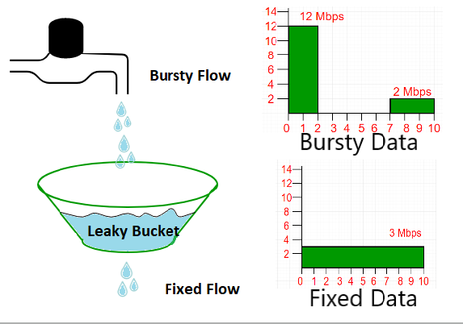
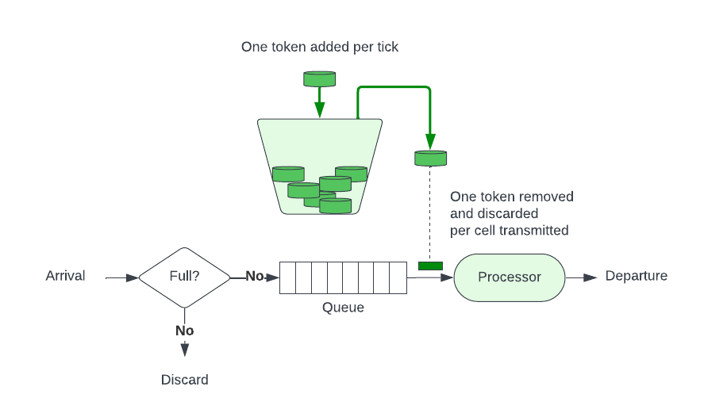

背景介绍
1999年，Dan Kegel 在互联网上发表了一篇文章，首次将 C10K 问题带入软件工程师的视野。在那个互联网勃兴的年代，计算机的运算处理能力，ISP 能够提供的带宽和网速都还十分有限，用户的数量也很少（那时候一个网站几百个人是很正常的事）。Dan Kegel 却已经敏锐地注意到极端的场景下资源紧张的问题。按照他的观察，某些大型的网络站点需要面对高达10000个客户端的并行请求。以当时的通行系统架构，单机服务器并不足以处理这个这个问题（当时绝大部分系统也没有那么大的流量，所以大部分人也没意识到这个问题）。因此，系统设计者必须为 C10K 问题做好准备。在那篇文章之中， Dan Kegel 提出了使用非阻塞异步 IO 模型，和使用各种内核系统调用黑魔法来提高系统 IO 性能的方式，来提高单机的并行处理能力。不得不说，这篇文章在当时很有先驱意义，它使得大规模网络系统的流量问题浮上了水面，也让人们意识到了系统容量建模和扩容提升性能的重要性。在它的启发下，C10K 问题出现了很多变种，从并发 C10K clients，到并发 C10K connections，到 C10K concurrency，可谓百花齐放。针对这些问题，也出现了很多的解决方案：
cpu 密集型？上高频 CPU， 上多核，上多处理器，开多线程/进程。
io 密集型？换ssd。还不够？更改 IO 策略，Reactor/Proactor。调高系统参数（包括但不仅限于文件描述符等系统资源，tcp 协议栈队列大小等等）。windows 出现了 IOCP，Java 把 IO 更新换代，从 BIO 变成了 NIO/AIO。
内存密集型？换 OS，加内存条，使用池化内存，使用各种 kernal call（又是各种黑魔法）。
单机纵向扩容提升（scale up）处理能力有极限，那就来横向扩容提升（scale out）分布式处理。在系统上找一条竖线切开，化整为零，负载均衡，各种 Hash Mod，Round robin 轮番上阵。
时间过去十几年，系统设计师要解决的架构问题，恐怕已经是 C1000K 问题了。
时代的发展，并没有停步于此。
当今系统设计要面临的问题，出现了新的特点：
首先，总有些有限的资源，不像带宽 cpu 一样呼之即来，最典型的例子是火车票、天猫双十一时的秒杀iPad。谚语有云，一只舰队的航行速度，由其中最慢的舰船决定。高并发的千军万马，即使浩浩荡荡地通过了我们设计的各种数据链路，最终到达要争夺各种各样资源的使用权的地方–数据库。这种争夺的互斥性，为我们带来了各种各样的锁（不管是乐观的还是悲观的）。锁是不可避免的 。而这种锁的存在，使得一个大型系统的 QPS 和 QoS ，严重受到后端数据存储层的制约。相信很多人对常见的 RDBMS 都有各种各样的使用经验。不同场景下不同类型的数据库的 TPS 可以达到几千到上万，甚至几万。但可以明确的看到，这种性能效率，无法和 C10K-C1000K 的系统轻松对接。传统的关系型数据库从关系代数出发的各种范型理论，给其实现戴上了沉重的历史枷锁，大部分的 RDBMS 的性能提升空间的天花板很快就能看到。从阿姆达尔定律出发，这就是系统的不可扩展瓶颈。我们当然可以使用分布式存储或者 NoSQL 来缓解这一问题，但因为 CAP 定律和网络分区现象的存在，我们并不能根本改善虚幻的锁的困境。这种困境的存在，使得一个很高 QPS 的系统的性能，会被后端 TPS 拉住 ，因而 QPS 并不能无限推高。因为没有 TPS 1000K 的 RDBMS，真正的 C1000K 的系统恐怕是镜花水月，无法实现的。
其次，流量出现了分化。大部分的系统设计的额定性能，总有界限。世界是互连的，但在某些场景下，却会出现要求无限性能的需求 。因为带宽和上网设备变得廉价，制造海量网络流量在当今变得非常轻而易举。最典型的例子是，12306每年都饱受人肉 DDoS 攻击的困扰，因为火车票是一种紧俏资源，用户如果刷不到就回不了家，所以一个无效的请求会触发更多的无效请求。一个抢不到票的用户的行为模式会变得好像肉鸡 一样，刷不到票就他会无限刷，一台电脑刷不到就换两台，不行再来手机刷，再不行去买抢票插件。网络时代变发达，用户可以发送请求的能力变得无比强大，火车座位却没有变多 ，12306的系统似乎设计得无论多高，都无法承载那么多流量（如果把12306全年的流量可视化出来，恐怕会看到一个非常尖锐的 Spike）。一个很高 QPS 的系统，终究不是一个无限 QPS 的系统 。
最后，并没有必要刻意追求 C10K 到 C1000K的高流量设计。软件设计的艺术是掌控复杂性（Complexity），不要为了设计的性能指标使设计失控，无法维护。 一个系统的平均 QPS 和峰值 QPS 完全可以不是一个数量级。如何兼顾这两种运行模式，是一个很大的设计难题。因为为峰值的 QPS 准备的系统在空闲的时候会浪费很多资源，为了设计一个高 QPS 的系统已经带来了很多复杂性（见上面列举的方法），要设计一个弹性伸缩的系统，又要带来更多的复杂性。这些复杂性当然催生了很多新技术的诞生，比如各种弹性云，秒级启动的容器，各种虚拟化技术（根据小道消息，亚马逊的云服务就是这样逼出来的 ）。但我们是不是真的有必要投入那么多的 effort，来追求这种尽善尽美 ？逆取不得，且宜顺守。有的时候， worse is better。
溯游从之，道阻且长。溯洄从之，宛在水中央。我们也许可以停下追求 QPS 的脚步，尝试思考下如何用恒定的一般性能（比如，几千的 QPS？），来解决大并发问题。如果我们能够用一些简单的技巧来保护我们的系统，能够过滤掉无效的流量，进而满足极端场景下性能的可靠性需求。
如何保护系统
对 workload 进行分级
在高并发的场景下，有一些请求是低质量的，没有触及到核心系统的核心资源的争夺，而有一些请求则是高质量的，必然要进入核心系统进行有限资源的争夺。保护核心系统的技术手段的中心思想，应该是尽量保证从高质量请求视角下看服务的高可用性，减少低质量请求对核心系统负载能力的干扰。在有些系统分析里，这是对工作负载（workload）进行分级，要按照服务级别来确保可用性标准，优先保护高级别的服务响应
三件利器
缓存、降级和限流，是常见的三种保护系统的利器。这三者相辅相成，最终的目的是把流量的峰值削掉，让蜂拥而至的请求在一个漏斗型的链路里逐渐变少。我们需要追求的效果，就是我们核心系统的正常设计，能够负载最终到达的高质量流量。
缓存
缓存提高了系统的读能力。如果我们能够把很多不需要用到锁的相对静态的资源，放到高速缓存之中，就能剥离掉大部分的低质量请求。这样一个外围系统的存在，就像一个护城河，泾渭分明地把不需要太强大一致性的低质量请求拦在核心系统之外。优秀的缓存，就像一个乘数效应的放大器，可以把一个低负载能力的系统，增幅为一个强大负载能力的系统。一个常见的例子，就是各种骨干网络上 CDN 的存在。
降级
降级，则试图彻底过滤掉低质量的请求。如果核心系统存在多种类型的服务，高质量请求的服务和低质量请求的服务混布（有些低质量请求的依然具有动态性和强一致性，不适合使用缓存），甚至有些弹性系统，出现高质量请求和低质量请求的多租户部署 ，则系统流量紧张时，有必要关掉所有低质量请求进入系统的可能性。一个常见的例子，就是支付宝在流量紧张的时候（比如双十一大促），会关掉支付宝查询信用卡账单的功能。这种情况下低质量的请求不会混在高质量的请求之中，争夺性能资源，间接放大了核心系统的性能容量。降级的存在，使得系统可能从完全可用（fully functional）的状态，进入部分可用（partially functional）的状态。有损服务虽然不如正常服务体验好，总好过最后大家同归于尽，系统 panic 甚至 crash 要得多。降级不仅保护了核心系统作为被调用的高质量请求响应能力，实际上也保护了调用方的负载能力。因为在复杂调用链路中，如果没有做过异步化改造，链路上的任何一个 callee hangs，会导致整条链路向前所有的 caller 都逐渐 hangs。因为牵一发而动全身的效应，各种层面上的 request 会在前段 caller 里不断累积，进而导致各种 caller 也进入 panic 甚至 crash 的状态。
限流
限流的应用场景，更加广泛。它不需要做各种请求的区分，就可以直接保证进入核心系统的流量不好超过系统的负载能力。限流的中心思想非常简单，即在各种层面上彻底限制住系统的并发能力，不做不着边际的性能承诺，只承诺响应达到 QPS 的负载能力，超过限制的请求，一律拒绝掉。可以说，限流的存在实现了降级的效果。笔者认为，降级和限流的关系，类似 Factory Method Pattern 与 Template Method Pattern 的关系。
开始谈谈限流
实际上我们在工作生活中已经见识过许多限流的例子。
一台机器，明明各种性能指标都还没有打满，QPS 却一直上不去，最后发现是网卡的问题，换了一块新网卡（有时候是换掉交换机上的一根光纤），QPS 马上就上去了。 这是硬件因素在限流。
我们想要下载一个电影，但被百度云的会员限制，没有办法开到全速，充了会员，下载速度立刻就上去了，这是软件因素在限流。
限流可以发生在 OSI 协议栈的硬件部分，也可以发生在软件部分。流量可以被限制在协议的出口端，也可以被限制在协议的入口端。限流还可以发生协议栈之上，有时候，我们可以把底层的协议栈当做空气一样透明，只在应用内部做限流。
我们可以粗略地把将要讨论的问题分为几个小的子问题：常见的限流算法是什么？如何在一台机器上限流？如何在分布式环境中限流？
几个概念的廓清
限流 (Rate Limiting) VS 限频 (Frequency Limiting)
限流 (Rate Limiting)：一个更宏观的概念。它指的是对系统总体的请求速率进行限制，保护整个服务不被流量洪峰冲垮。它的保护对象是**“服务”**。例如：
限频 (Frequency Limiting)：一个更微观的概念。它通常针对某个实体（如用户ID、设备ID、IP地址）在某个具体功能上的使用频率。它的保护对象是**“功能”**或防止资源被滥用。例如：
我们常说的其实是限频，这最终涉及我们的限频 key 的设计，限频的key通常至少是某个 path 或者 id 正交组合成一个维度-当然还可以引入更多的其他维度。
流量整形 (Traffic Shaping) VS 流量节流 (Throttling) VS 背压 (Back Pressure)
Shaping (整形) 是**“缓冲和延迟”，让流量平滑；Throttling (节流) 是“监督和丢弃”**，直接拒绝超额流量。
QPS限流：发生数量 VS 完成数量
这是一个非常关键的实现细节问题。当我们说“QPS限流100”，我们到底在限制什么？
答案是：我们限制的是每秒允许进入系统的请求发生数量 (Number of incoming requests)。
限流组件（如Nginx限流模块、API网关）通常工作在系统的最前端。它的职责是在请求进入后端业务逻辑之前就做出判断。
为什么是发生数量？
保护目的：限流的根本目的是防止过多的请求压垮后端服务。如果等到请求都处理完成了再来统计，那就失去了保护的意义。
实现简单高效：在入口处简单地对请求计数是非常快的操作。如果要统计“完成数量”，就需要追踪每个请求的处理状态，这会大大增加限流逻辑的复杂性和开销。
所以，QPS限流可以理解为：“门卫每秒只放100个人进大楼，不管进去的人要花多久办完事出来。”
常见的限流算法
在网上搜一搜，就可以常见的限流算法并不多，大致上分为计数器算法、漏桶（Leacky Bucket）和令牌桶（Token Bucket）。这些算法各有各的长处，但他们都有一个基于配额（Quota） 的设计思路，颇有异曲同工之妙。即要产生请求，必须要得到许可（Permit），通过控制许可的总数，和通过控制许可发放的速度，来实现 QPS 的节流（Throttling）。不同的算法，就是在这些要素上做不同的变化。我们可以把这种算法称作精确限流算法，我们姑且称之为 Rate Limiter Algorithm。
除此之外，实际上还存在一些可以进行不精确限流的模糊限流算法，我们姑且称之为 Concurrency Limiter Algorithm。
两种算法的核心区别是：限制同一个时刻同时执行的请求数 vs 限制一个时间窗口同时执行的请求数 。
特性维度
Concurrency Limiter Algorithm-通常是Semaphore（信号量）
Rate Limiter Algorithm-通常是令牌桶／漏桶
核心目标 并发数控制（Concurrency Control）
速率控制（Rate Control）
限制对象 同时访问特定资源的线程数量
一个时间窗口内允许通过的请求数量（QPS）
工作模式 “许可”模型：有固定数量的“许可证”，线程拿到许可才能执行，用完必须归还。
“令牌”模型：系统按固定速率生成令牌，请求拿到令牌才能执行，令牌用完即丢弃。
流量形态 无法处理突发流量。一旦许可被占满，新来的请求只能阻塞等待。
可以平滑处理突发流量。SmoothBursty 允许“透支”未来的令牌；SmoothWarmingUp 通过预热逐步提升处理速率。
关注点 “当前有多少在运行？”
“过去一秒处理了多少？”
典型场景 1. 数据库连接池（连接数限制）
1. API 接口限流（QPS 限制）
代码隐喻 餐厅只有 3 张桌子（new Semaphore(3)）。无论顾客来得多快，最多只能同时服务 3 桌，其余需排队等位。
高速公路收费站每秒抬杆 2 次（RateLimiter.create(2.0)）。允许几辆车紧跟着冲过去（突发），之后车辆需等待更久。
Concurrency Limiter Algorithm (并发限制算法)：
核心工具：Semaphore (信号量) 是其最经典的实现。
关注点：存量。即“池子”里有多少可用的资源。它不关心请求来得多快，只关心当前有没有空闲的“坑位”。
应用场景：保护系统内部的有限资源不被耗尽。
数据库连接池：池中只有 10 个连接，用 Semaphore(10) 限制，确保最多只有 10 个线程能拿到连接。
本地资源：限制同时打开的文件句柄数，或者同时执行某个非常消耗 CPU/内存的计算任务的线程数。
Rate Limiter Algorithm (速率限制算法)
核心工具：令牌桶 (Token Bucket)、漏桶 (Leaky Bucket)、GCRA 等都是这类算法的具体实现。Guava 的 RateLimiter 就是典型的令牌桶实现。
关注点：流量。即“水管”里流速有多快。它不关心某个瞬间有多少任务在并行，只关心进入的速率是否超标。
应用场景：控制外部或内部的请求流量，以满足服务等级协议 (SLA) 或保护下游系统。
API 网关：限制外部用户对 /api/v1/data 接口的调用为 100 QPS。
服务间调用：服务 A 调用服务 B 时，服务 A 内置一个速率限制器，确保自己访问服务 B 的速率不会超过约定值，做个“有礼貌的”调用方。
消息队列消费：控制消费者从队列中拉取消息的速率，防止瞬间打垮数据库。
Little’s Law 利特尔定律的推论
Little’s Law 不仅是排队论的基础定理，更是设定限流阈值的理论依据。通过该定律，我们可以根据系统的并发处理能力和期望响应时间，反推出合理的 QPS 限流值。
智力游戏推论
总开销 = 单元开销 × 单元数量 \text{总开销} = \text{单元开销} \times \text{单元数量}
总开销 = 单元开销 × 单元数量
系统中物体的平均数量 = 离开系统的速度=进入系统的速度 × 每个物体在系统中的停留时长 \text{系统中物体的平均数量} = \text{离开系统的速度=进入系统的速度} \times \text{每个物体在系统中的停留时长}
系统中物体的平均数量 = 离开系统的速度 = 进入系统的速度 × 每个物体在系统中的停留时长
这是一个流入流出系统的通用法则：
夜总会总容量60人，平均停留3小时。则人的离去速率是20人/小时。如果前面排了20人，我们还需要等10小时。
如果我有150箱酒，我年喝25箱再买入25箱，则每箱酒的停留时间是多少？要先求出 总离开量（150） = 酒离开系统的速度（25） × 离开时间==停留时间 \text{总离开量（150）} = \text{酒离开系统的速度（25）} \times \text{离开时间==停留时间} 总离开量（ 150 ） = 酒离开系统的速度（ 25 ） × 离开时间 == 停留时间
如果一个系统的磁盘每秒钟处理25个请求。一个任务由100个请求组成，则系统的吞吐量为0.25个任务每秒。如果有20个终端，每个终端的用户的思考时间为20秒（这个设定有什么用是值得存疑的）。系统的吞吐量和响应时间是多少？
并发性=n=20 = 吞吐量0.25task每秒 × 思考时间20s+响应时间 \text{并发性=n=20} = \text{吞吐量0.25task每秒} \times \text{思考时间20s+响应时间}
并发性 =n=20 = 吞吐量 0.25task 每秒 × 思考时间 20s+ 响应时间
当我们算出0.25task每秒的时候，我们就能算出响应时间为80-20=60。所以磁盘作为最窄带宽的设备的吞吐量决定了系统的响应时间-短板定律。
并发性推论
并发性和速率实际上是紧密相连的。维基百科上有有趣的讨论 。
公式：L=λW
L：系统中长期平均的顾客数量（如排队人数+正在服务人数）。
λ：长期平均到达率（单位时间内进入系统的顾客数）。
W：顾客在系统中停留的平均时间（包括等待和服务时间）。
本质：揭示了系统库存（L） 、**吞吐率（λ）与 流动时间（W）**的乘法关系，适用于任何稳态系统。
利特尔法则 (Little’s Law) 的一个推论：
Concurrency = QPS × RT \text{Concurrency} = \text{QPS} \times \text{RT}
Concurrency = QPS × RT
QPS: 每秒查询数（系统的吞吐量）
Concurrency: 系统中正在被处理的并发请求数。你可以把它理解为系统有多少个“工人”在同时干活（例如，Web服务器的线程数）。
RT (Response Time): 处理单个请求所需的平均时间。
假设一个系统有 150个“工人”（并发处理能力为150）。
优化前：RT = 1.5s
理论最大 QPS = 150 / 1.5s = 100
优化后：RT = 1.0s
理论最大 QPS = 150 / 1.0s = 150
结论： 在并发能力（工人数量）不变的情况下，将请求处理时间（RT）从1.5秒降低到1秒，系统的理论最大QPS从100提升到了150，足足提升了50%！
这背后的逻辑很简单：每个工人干活的速度变快了，单位时间内能完成的活就更多了。
如何用 Little’s Law 设定限流阈值
根据公式 L = λW（或 Concurrency = QPS × RT），我们可以反推限流阈值：
QPS m a x = Concurrency m a x RT a v g \text{QPS}_{max} = \frac{\text{Concurrency}_{max}}{\text{RT}_{avg}}
QPS m a x = RT a v g Concurrency m a x
实际应用步骤 ：
测量系统的最大并发处理能力 ：例如，线程池大小为 200，数据库连接池为 50，则瓶颈并发数为 50测量或估算平均响应时间 ：例如，P99 响应时间为 200ms计算理论 QPS 上限 ：QPS_max = 50 / 0.2s = 250 QPS设置安全余量 ：通常取理论值的 70%-80%，即限流阈值设为 175-200 QPS
这个公式在系统中的实际表现情况是：
为了提升系统的容量：你必须想办法降低RT（优化代码、升级硬件、增加缓存等）。从这个角度看，RT和QPS的能力是负相关的。
当分析一个正在运行的系统时：随着负载（QPS）的增加，RT会从平稳到急剧上升。从这个角度看，在系统达到瓶颈时，QPS和RT的表现是正相关的。
我们还可以通过 concurrency 来直接推导不同时期的 worker，进而调节线程池的 core thread 数量和 max thread 数量。
计数器算法
并发计数器 Concurrency Limiter
这种算法的设计思想，是对一个要限流的资源配上一个计数器。每次请求前对这个计数器进行加操作或者减操作，通过对当前计数器的值与 Limit 值的对比，决定是否允许操作执行（即发放 Permit）。
让我们用一个应用内的多线程环境举例。
方法原型
一个简单的总量计数器如下：
1 2 3 4 5 6 7 8 9 10 11 12 13 14 15 16 17 18 try {if (atomicCounter.incrementAndGet() > limit) {return ;finally {
这个总量计数器的设计，使得我们可以控制同一瞬间能够处理的请求的数量。聪明的读者可能已经想到了，这是一种并发控制 (Concurrency Control) 思想——通过限制同时进入临界区的请求数量来保护共享资源，和使用 Java 自带的 Semaphore 异曲同工。
Semaphore 版本
1 2 3 4 5 6 7 8 9 10 11 12 13 14 15 16 17 18 19 20 21 22 23 24 25 26 27 28 29 30 31 32 33 34 35 36 37 38 39 40 41 42 43 44 45 46 import java.util.concurrent.ExecutorService;import java.util.concurrent.Executors;import java.util.concurrent.Semaphore;import java.util.concurrent.TimeUnit;public class SemaphoreConcurrencyLimiter {public static void main (String[] args) {final int MAX_CONCURRENT_REQUESTS = 3 ;final Semaphore semaphore = new Semaphore (MAX_CONCURRENT_REQUESTS);ExecutorService executor = Executors.newCachedThreadPool();for (int i = 1 ; i <= 10 ; i++) {final int requestId = i;try {"[请求 %d] 等待获取许可... (当前可用许可: %d)\n" , requestId, semaphore.availablePermits());"[请求 %d] 成功获取许可，开始处理业务...\n" , requestId);2 );catch (InterruptedException e) {finally {"[请求 %d] 业务处理完成，释放许可。\n" , requestId);
唯一的差别是，Semaphore 可以阻塞请求，使得请求最终可以可以执行完成，而使用 atomic 的做法更加简单粗暴，如果没有办法处理请求，就丢弃请求，不再等待。
阻塞与自旋
我们当然可以让 atomic 具备阻塞的能力，但这就要引入自旋了。
1 2 3 4 5 6 7 8 9 10 11 12 13 14 15 16 17 18 19 20 21 22 23 24 25 26 27 28 29 30 31 32 33 34 35 36 37 38 39 40 41 42 43 44 45 46 47 48 49 50 51 52 53 54 55 56 57 58 59 60 61 62 import java.util.concurrent.ExecutorService;import java.util.concurrent.Executors;import java.util.concurrent.TimeUnit;import java.util.concurrent.atomic.AtomicInteger;public class AtomicSpinLockLimiter {private static final int MAX_CONCURRENT_REQUESTS = 3 ;private static final AtomicInteger atomicCounter = new AtomicInteger (0 );public static void processRequest (int requestId) {while (true ) {int currentCount = atomicCounter.get();if (currentCount >= MAX_CONCURRENT_REQUESTS) {continue ;if (atomicCounter.compareAndSet(currentCount, currentCount + 1 )) {"[请求 %d] 成功获取许可 (当前并发数: %d)\n" , requestId, atomicCounter.get());break ;try {"... [请求 %d] 正在处理业务...\n" , requestId);2 );catch (InterruptedException e) {finally {int finalCount = atomicCounter.decrementAndGet();"[请求 %d] 业务处理完成，释放许可 (当前并发数: %d)\n" , requestId, finalCount);public static void main (String[] args) {ExecutorService executor = Executors.newCachedThreadPool();for (int i = 1 ; i <= 10 ; i++) {final int reqId = i;
这种方式的优点是避免了线程上下文切换带来的开销，对于那些“等待时间非常短”的场景，性能会很高。缺点是如果等待时间很长，它会持续空耗 CPU 资源。
总结
基于 Atomic 的实现是快速失败 (Fail-fast) 的，而Semaphore.acquire()则是阻塞等待。前者适用于那些可以被轻易丢弃或由客户端重试的请求，如果引入重试；后者则适用于希望请求最终能被处理的场景。
Rate Limiter Algorithm
这个总量计数器并不与某个特定的时间窗口挂钩，而且又有衰减作用 ，这也就意味着它能够限制一瞬间的并发总数，并且可以被复用，但我们无法预测它实际控制出的 QPS 数目 。所以它是一个 Concurrency Limiter Algorithm。
所以我们可以试着把它和某个特定的时间窗口挂钩，让这个计数器只针对一个时间节点起作用。这就达到了 Rate Limiter Algorithm 的作用。
固定窗口计数器 (Fixed Window Counter)
graph TD
subgraph "固定窗口计数器 (Fixed Window Counter)"
A{请求到达} --> B{当前窗口是否结束?}
B -->|是| C[重置计数器为 1]
B -->|否| D[计数器 +1]
C --> E{计数器 > 阈值?}
D --> E
E -->|否| F[允许请求]
E -->|是| G[拒绝请求]
end借用缓存的实现如下：
1 2 3 4 5 6 7 8 9 10 11 12 13 14 15 16 17 18 19 20 21 22 2 , TimeUnit.SECONDS)new CacheLoader <Long, AtomicLong>() {public AtomicLong load (Long key) {return new AtomicLong (0 );long limit = 1000 ; void handleRequest () {long currentSecond = System.currentTimeMillis() / 1000 ;if (counters.getUnchecked(currentSecond).incrementAndGet() > limit) {return ;
在这里，我们使用了一个有效期为2秒的缓存（为了防止时间不准，实际上应该是任何大于1s 的缓存有效期都可以拿来配置缓存）来存储 atomic与当前的时间。每个请求会在当前的时间窗口里尝试增加计数器，如果当前时间窗口内计数器还没有超过 QPS 极限值，就处理请求，否则就进入自旋，等待下一秒的新的缓存计数器的到来。
这种 QPS 算法的时间窗口，最好设置为1秒为单位
以上面的例子为单位，每秒钟诞生一个limit = 1000的计数器是正确的做法。如果为了减少缓存计数器数量，试图用1分钟长度的缓存配合 limit = 60000，有可能在极端情况下会出现，在59秒 和61一共出现120000个请求的情况。此时计数器依然允许这些流量通过，但这三秒的 QPS 已经远远高于1000。使用计数器的 RateLimiter 的简单粗暴方法，只能说是够用，为了防止临界点性能毛刺（Spike）的存在，我们要严格保证生成计数器的数量和顺序，本质上还是有很大的优化空间。
滑动窗口日志 (Sliding Window Log)
graph TD
subgraph "滑动窗口日志 (Sliding Window Log)"
A{请求到达} --> B[移除日志中过期的请求时间戳];
B --> C[获取日志中剩余请求的数量];
C --> D{数量 < 阈值?};
D -- 是 --> E[记录当前请求时间戳, 允许请求];
D -- 否 --> F[拒绝请求];
end固定窗口算法之所以会产生毛刺，根源在于它粗暴地将时间分片，忘记了每个请求实际发生的时间点。那么，最精确的修正方法，就是不忘掉它们。
滑动窗口日志 (Sliding Window Log) 算法的核心思想正是如此：记录下每个请求实际发生的时间戳。它在概念上维护了一个以时间为轴的“滑动窗口”，通过精确计算落在这个窗口内的请求数量来做出决策，从而彻底消除了边界问题，实现了最平滑的流量控制。
这种算法通常会借助一个有序的数据结构（如队列或有序集合）来存储请求的时间戳。其工作流程如下：
移除过期时间戳：当一个新请求到达时，算法会首先从集合中移除所有已经“滑出”时间窗口的时间戳。例如，如果我们的时间窗口是1秒，那么所有在 (当前时间 - 1秒) 之前的时间戳都会被清理掉。
添加新请求时间戳：将当前请求的时间戳存入集合中。
计算窗口内请求数：计算集合中当前元素的数量。这个数量，就是过去一个时间窗口内最精确的请求总数。
判断并执行：如果该数量小于或等于限流阈值 limit，则允许请求通过；否则，拒绝该请求。
基于 java.util.LinkedList (单机环境)
在单个 JVM 实例中，LinkedList 是一个实现此算法的直观选择。它作为一个队列，可以高效地在头部移除过期的时间戳，并在尾部添加新的时间戳。
要点：在多线程环境下，对 LinkedList 的所有访问都必须是线程安全的，因此需要使用 synchronized 关键字来保证操作的原子性。
1 2 3 4 5 6 7 8 9 10 11 12 13 14 15 16 17 18 19 20 21 22 23 24 25 26 27 28 29 30 31 32 33 34 35 36 37 38 39 40 41 42 43 44 import java.util.LinkedList;import java.util.concurrent.TimeUnit;public class SlidingWindowLogByLinkedList {private final long windowSizeInMillis; private final int limit; private final LinkedList<Long> requestTimestamps = new LinkedList <>();public SlidingWindowLogByLinkedList (long windowDuration, TimeUnit unit, int limit) {this .windowSizeInMillis = unit.toMillis(windowDuration);this .limit = limit;public synchronized boolean tryAcquire () {long currentTime = System.currentTimeMillis();long windowStart = currentTime - windowSizeInMillis;while (!requestTimestamps.isEmpty() && requestTimestamps.peek() <= windowStart) {if (requestTimestamps.size() >= limit) {return false ; return true ;
基于 Redis ZSET (分布式环境)
当限流策略需要跨越多个服务实例时（例如在微服务架构中），就需要一个集中的存储。Redis 的有序集合 ZSET 是实现分布式滑动窗口日志的完美工具。
要点：ZSET 是一个神奇的数据结构，它为每个成员（member）关联一个分数（score）。我们可以将时间戳作为 score，将唯一的请求ID（或时间戳本身）作为 member。Redis 提供了原子性的命令来移除一个分数区间内的成员并计算成员总数，这使得实现非常高效。
为什么要用时间戳？
Redis Sorted Set 中对 Member 的唯一硬性要求是：在一个 ZSET 中，每个 Member 的值必须是唯一的。
如果你尝试用一个已经存在的 Member 去执行 ZADD，Redis 不会添加一个新元素，而只会更新这个现有 Member 的 Score（分数），并且命令会返回 0（表示新增了0个元素）。
使用请求ID是可行的，但有唯一性风险；单独使用时间戳更简单，但有碰撞风险。最稳妥的方案是通过 “高精度时间戳 + 随机数” 的方式来生成一个绝对唯一的 Member，这样能确保限流器既准确又可靠。
1 2 3 4 5 6 7 "1678886400123:abcdef12345"
基于 multi/exec
1 2 3 4 5 6 7 8 9 10 11 12 13 14 15 16 17 18 19 20 21 22 23 24 25 26 27 28 29 30 31 32 33 34 35 36 37 38 39 40 41 42 43 44 45 46 47 48 49 50 51 52 53 54 55 56 57 58 59 60 61 62 63 64 65 66 67 68 69 70 71 72 73 74 75 76 77 78 79 80 import redis.clients.jedis.Jedis;import redis.clients.jedis.Transaction;import java.util.UUID;public class SlidingWindowLogByRedisZSet {private final Jedis jedis; private final String key; private final long windowSizeInMillis; private final int limit; public SlidingWindowLogByRedisZSet (Jedis jedis, String key, long windowDuration, TimeUnit unit, int limit) {this .jedis = jedis;this .key = key;this .windowSizeInMillis = unit.toMillis(windowDuration);this .limit = limit;public boolean tryAcquire () {long currentTime = System.currentTimeMillis();long windowStart = currentTime - windowSizeInMillis;Transaction multi = jedis.multi();0 , windowStart);String member = UUID.randomUUID().toString();int ) (windowSizeInMillis / 1000 ) + 2 );long currentCount = (Long) results.get(1 );if (currentCount >= limit) {return false ;return true ;
Redis 的MULTI/EXEC提供的原子性，更准确地说是执行原子性，它保证：
命令打包：所有在MULTI和EXEC之间的命令会被打包成一个队列，然后一次性、按顺序地发送给 Redis Server。
执行不中断：Redis Server 在执行这个命令队列时，不会被任何其他客户端的命令所打断。
在我们的限流场景中，我们需要：
检查当前窗口的请求数 (ZCARD)。
判断数量是否小于 limit。
如果小于，则执行添加操作 (ZADD)。
如果使用 MULTI/EXEC，客户端的代码逻辑是这样的：
1 2 3 4 5 6 7 8 // 1 . 客户端发起事务// 2 . 客户端将一堆命令加入队列，但此时它并不知道 ZCARD 的结果0 (now - 1000 )"request_id" // 3 . 客户端命令服务器执行
当EXEC执行时，Redis 会一口气做完这三件事。但问题在于，ZADD 命令是无条件入队的。客户端必须等到EXEC的结果返回后，才能拿到ZCARD 的计数值。如果此时发现计数值已经超了，就只能再发起一个ZREM 命令去“补偿”，而这个补偿操作和之前的事务并非原子，中间可能已经有其他操作插入，导致逻辑混乱。
简单来说，MULTI/EXEC无法在事务中间实现条件分支逻辑。
基于 zset
1 2 3 4 5 6 7 8 9 10 11 12 13 14 15 16 17 18 19 20 21 22 23 24 25 26 27 28 29 30 31 32 33 34 35 36 37 38 39 40 41 42 43 44 45 46 47 48 49 50 51 52 53 54 55 56 57 58 59 60 61 62 63 64 65 66 67 68 69 70 71 72 73 74 75 76 77 78 79 80 81 82 83 84 85 86 87 88 89 90 91 92 93 94 95 96 97 98 99 100 101 102 103 104 import redis.clients.jedis.Jedis;import java.util.Collections;import java.util.UUID;import java.util.concurrent.TimeUnit;public class SlidingWindowLogByRedisLua {private final Jedis jedis;private final String key;private final int limit;private final long windowSizeInMillis;private static final String LUA_SCRIPT = "local key = KEYS[1] " +"local currentTime = tonumber(ARGV[1]) " +"local windowSize = tonumber(ARGV[2]) " +"local limit = tonumber(ARGV[3]) " +"local member = ARGV[4] " +"local windowStart = currentTime - windowSize " +"redis.call('ZREMRANGEBYSCORE', key, 0, windowStart) " +"local currentCount = redis.call('ZCARD', key) " +"if currentCount < limit then " +" redis.call('ZADD', key, currentTime, member) " +" redis.call('PEXPIRE', key, windowSize + 1000) " +" return 1 " + "else " +" return 0 " + "end" ;public SlidingWindowLogByRedisLua (Jedis jedis, String key, int limit, long windowDuration, TimeUnit unit) {this .jedis = jedis;this .key = key;this .limit = limit;this .windowSizeInMillis = unit.toMillis(windowDuration);public boolean tryAcquire () {long currentTime = System.currentTimeMillis();String member = UUID.randomUUID().toString();Object result = jedis.eval(return Long.valueOf(1L ).equals(result);public static void main (String[] args) throws InterruptedException {Jedis jedis = new Jedis ("localhost" , 6379 );String limiterKey = "rate_limiter:my_app" ;SlidingWindowLogByRedisLua rateLimiter = new SlidingWindowLogByRedisLua (jedis, limiterKey, 5 , 10 , TimeUnit.SECONDS);for (int i = 1 ; i <= 7 ; i++) {if (rateLimiter.tryAcquire()) {"请求 %d: 成功 (Timestamp: %d)\n" , i, System.currentTimeMillis());else {"请求 %d: 被限流 (Timestamp: %d)\n" , i, System.currentTimeMillis());500 );
1 2 3 4 5 6 7 8 9 10 11 12 13 14 15 16 17 18 19 20 21 22 23 24 25 26 27 28 29 30 31 32 33 34 local key = KEYS[1 ]local currentTime = tonumber (ARGV[1 ])local windowSize = tonumber (ARGV[2 ])local limit = tonumber (ARGV[3 ])local member = ARGV[4 ]local windowStart = currentTime - windowSize'ZREMRANGEBYSCORE' , key, 0 , windowStart)local currentCount = redis.call('ZCARD' , key)if currentCount < limit then 'ZADD' , key, currentTime, member)'PEXPIRE' , key, windowSize + 1000 )return 1 else return 0 end
Redis 提供了 ZREMRANGEBYSCORE 这样的命令，可以以极高的效率（O(log(N)+M)）移除一个时间窗口之外的所有记录。
总结
分布式限流器场景下：Redis 事务 VS Lua 脚本对比
特性
Redis 事务 (MULTI/EXEC)
Lua 脚本
原子性保证 执行原子性 逻辑原子性
条件逻辑能力 不支持 完全支持 if currentCount < limit then... 进行条件判断
解决竞态条件 无法解决 完美解决
实现复杂度 极高且不可靠 中等
性能 较差 极高
主要优点 几乎没有优点 原子、高效、简洁
主要缺点 方案不可行 脚本必须高效
结论 不适用 最佳选择
滑动窗口计数器 (Sliding Window Counter)
graph TD
subgraph "滑动窗口计数器 (Sliding Window Counter)"
A{请求到达} --> B[定位到当前子窗口];
B --> C[将过期的子窗口计数清零];
C --> D[对所有子窗口的计数求和];
D --> E{总和 > 阈值?};
E -- 否 --> F["当前子窗口计数+1, 允许请求"];
E -- 是 --> G[拒绝请求];
end滑动窗口日志算法虽然能实现最精确的流量控制，但其对每一个请求都进行记录的方式，在高并发场景下会消耗巨大的内存，这在工程实践中往往是难以接受的。因此，我们需要一种兼顾了精度与资源消耗的折中方案——滑动窗口计数器 (Sliding Window Counter)。
其核心思想是，将一个大的时间窗口，切分成若干个更小的、精细化的**“子窗口” (Sub-window)** 或称之为**“桶” (Bucket)**，并为每个子窗口独立维护一个计数器。
这样一来，当时间窗口向前“滑动”时，不再是粗暴地跳跃一整个大窗口的长度，而是平滑地、一格一格地滑过这些子窗口。
1 2 3 4 5 6 7 8 9 10 11 12 13 14 15 16 17 18 19 20 21 22 23 24 25 26 27 28 29 30 31 32 33 34 35 36 37 38 39 40 41 42 43 44 45 46 47 48 49 50 51 52 53 54 55 56 57 58 59 60 61 62 63 64 65 66 67 68 69 70 71 72 73 74 75 76 77 78 79 80 81 82 83 84 85 86 87 88 89 90 91 92 93 94 95 96 97 98 99 100 101 102 103 104 105 106 107 108 109 110 111 112 113 114 115 116 117 118 119 120 121 122 123 124 125 126 127 128 129 130 131 132 133 import java.util.concurrent.atomic.AtomicInteger;import java.util.concurrent.locks.ReentrantLock;public class SlidingWindowCounter {private final int limit; private final int subWindowCount; private final AtomicInteger[] subWindowCounters; private final long windowSizeInMillis; private final long subWindowSizeInMillis; private volatile int lastWindowIndex = 0 ; private volatile long lastWindowTimestamp = System.currentTimeMillis(); private final ReentrantLock updateLock = new ReentrantLock (); public SlidingWindowCounter (int limit, long windowSizeInMillis, int subWindowCount) {this .limit = limit;this .windowSizeInMillis = windowSizeInMillis;this .subWindowCount = subWindowCount;this .subWindowSizeInMillis = windowSizeInMillis / subWindowCount;this .subWindowCounters = new AtomicInteger [subWindowCount];for (int i = 0 ; i < subWindowCount; i++) {this .subWindowCounters[i] = new AtomicInteger (0 );public boolean tryAcquire () {long currentTime = System.currentTimeMillis();int currentIndex = (int ) ((currentTime / subWindowSizeInMillis) % subWindowCount);if (updateLock.tryLock()) {try {long timePassed = currentTime - lastWindowTimestamp;if (timePassed > windowSizeInMillis) {else {int windowsToReset = (int ) (timePassed / subWindowSizeInMillis);if (windowsToReset > 0 ) {this .lastWindowTimestamp = currentTime;this .lastWindowIndex = currentIndex;finally {long currentCount = 0 ;for (AtomicInteger counter : subWindowCounters) {if (currentCount < limit) {return true ;else {return false ;private void resetAllWindows () {for (int i = 0 ; i < subWindowCount; i++) {0 );private void resetSlidingWindows (int windowsToReset) {for (int i = 0 ; i < windowsToReset; i++) {int indexToReset = (lastWindowIndex + 1 + i) % subWindowCount;0 );public static void main (String[] args) throws InterruptedException {SlidingWindowCounter limiter = new SlidingWindowCounter (20 , 10000 , 10 );"--- 快速发送第一批请求 ---" );for (int i = 0 ; i < 25 ; i++) {if (limiter.tryAcquire()) {"请求 " + (i + 1 ) + ": 成功" );else {"请求 " + (i + 1 ) + ": 被限流" );100 ); "\n--- 等待3秒，让部分窗口过期 ---" );3000 );"\n--- 发送第二批请求 ---" );for (int i = 0 ; i < 10 ; i++) {if (limiter.tryAcquire()) {"请求 " + (i + 26 ) + ": 成功" );else {"请求 " + (i + 26 ) + ": 被限流" );100 );
代码与理论的对应关系
子窗口计数器：代码中的 private final AtomicInteger[] subWindowCounters; 就是用来存储每个子窗口计数的数组。使用AtomicInteger 是为了保证高并发下计数的原子性和线程安全。
定位当前子窗口：int currentIndex = (int) ((currentTime / subWindowSizeInMillis) % subWindowCount); 这行代码精确地实现了根据当前时间定位到其在环形数组中所属的子窗口索引。
窗口滑动：代码中最核心的部分是tryAcquire()方法中updateLock 锁住的代码块。它通过计算当前时间与上次记录时间的差值，来判断时间流逝了多少个子窗口的长度，然后主动将已经过期的子窗口计数器清零，从而实现了窗口“向前滑动”的效果。
计算窗口总数：for (AtomicInteger counter : subWindowCounters) 循环遍历并求和，得到了当前整个滑动窗口内的总请求数。
优点与缺点
优点：在内存消耗和算法精度之间取得了绝佳的平衡。它仅需固定数量的计数器（与子窗口数量相同），内存占用极低，同时又可以有效地缓解固定窗口算法的极端毛刺问题。
缺点：实现逻辑比固定窗口要复杂一些。同时，它依然是一种近似的实现，其平滑程度取决于子窗口的划分粒度，在子窗口的边界上依然可能存在微小的流量突刺。但在绝大多数工程场景下，这种精度已经完全足够。
桶算法
哲学差异
管控入口 (Ingress) VS 管控出口 (Egress)
令牌桶 (Token Bucket)：管控入口
它像一个**“门卫”**，守在系统的大门口。
每个请求想进入系统时，都必须从门卫那里拿到一张**“门票” (令牌)**。
拿到票，立刻就能进门（被处理）。拿不到票，立刻就被拒绝。
核心逻辑：控制的是**“能不能进”**的问题。
漏桶 (Leaky Bucket)：管控出口
它像一个**“固定的安检通道”**。
所有请求不管来得多快，都必须先进入一个**“等待区” (桶/队列)**。
安检通道以一个恒定的速度，从等待区里拉人去安检（处理请求）。
核心逻辑：控制的是**“以多快的速度处理”**的问题。
管控逻辑与状态核心
令牌桶 (Token Bucket) ：
逻辑核心 ：系统维护一个存放**“许可”或“令牌” (Token)** 的桶。系统以固定速率向桶内添加令牌。状态核心 ：桶内的令牌数量 。决策方式 ：当请求到达时，它必须尝试从桶中获取一个或多个令牌。如果成功，请求被允许；如果失败，则根据预设策略进行处理。
漏桶 (Leaky Bucket) ：
逻辑核心 ：系统将所有进入的请求视为水滴，放入一个“漏水的桶”中，桶以恒定的速率漏出（处理请求）。状态核心 ：桶当前的**“水量”或“占用容量”。在更高效的 GCRA 实现中，这个状态被抽象成一个 理论到达时间 (TAT)**。决策方式 ：当请求到达时，检查桶里是否还有空间容纳这个请求。如果可以，请求被接纳；如果不行，则根据预设策略处理。
令牌桶 VS 漏桶
特征
令牌桶 (Token Bucket)
漏桶 (Leaky Bucket / GCRA)
管控点 入口 (Ingress) — 检查是否有“许可”进入。出口 (Egress) — 控制以何种恒定速率“处理”请求。
桶里装的 令牌 (Tokens) — 代表未来的处理能力。处理能力的配额 — 在经典模型中是请求本身，在 GCRA 中是代表未来处理时刻的时间戳 (TAT) 。
核心机制 消耗令牌 来为请求获得处理许可。请求的到来会推进 一个“未来处理完成”的时间点。
请求队列 可选 (Optional) 无队列 ：获取令牌失败则立即拒绝/报错。有队列 ：获取令牌失败则进入队列，等待新令牌生成。可选，但对于流量整形是必需的 (Optional, but required for shaping) 用于流量整形 ：必须有一个队列来暂存突发请求，以实现“削峰填谷”。仅用于速率限制 ：可以没有队列，当桶满时（如 GCRA 检查失败）直接拒绝请求。
主要优点 低延迟，允许突发 流量平滑
主要缺点 突发流量可能直接冲击下游系统。
如果配置了队列，会增加请求的平均响应时间 (Latency)。
打个比方：
令牌桶里面的capacity在特定时间里面积累了30个令牌，一瞬间来了30个流量，它们会一次通过。因为令牌被积累起来，一次消耗光了。
同样地，假设我们认为漏桶的“空”等于 burst 的配额，一定时间以后桶漏空了，所以一瞬间来了30个流量，漏桶也能处理这30个突发流量。但是这种处理实际上是：“允许这30个请求留在桶里不丢弃”，仍然让他们按照特定速率出队，用“装请求”而不是“一次性放行”来处理这些请求。
所以这种“漏桶流逝时间会消耗水量”只是累积“空”而已。允许 burst 的漏桶变种实际上是，比如我的桶的容量还是30，但是我允许单位时间的 burst 为
这种burst的计算和回复方式又是和令牌桶不一样的。所以“令牌桶可以积攒令牌的”，“漏桶里流逝时间是不会累加burst的，有些版本甚至不允许burst-原始版本”。
漏桶算法
graph TD
subgraph "漏桶 (Leaky Bucket)"
A{请求到达} -- 到达速率不固定 --> B((请求队列/桶));
B -- 队列未满 --> C[进入队列等待];
B -- 队列已满 --> D[溢出/拒绝请求];
C -- 以固定速率流出 --> E[处理请求];
end
根据维基百科，漏桶算法 的描述如下：
一个固定容量的漏桶，按照常量固定速率流出水滴；
如果桶是空的，则不需流出水滴；
可以以任意速率流入水滴到漏桶 ；如果流入水滴超出了桶的容量，则流入的水滴溢出了（被丢弃），而漏桶容量是不变的。
我们可以把水滴想象成一个个许可。request 们在漏桶里排队，漏桶算法是一个完全定时发令牌的算法，因此这些请求也因此被间隔性地阻滞在桶中，只有通过固定的时间间隔，才能顺利的通过这个漏桶。
java 的流量整形器 (Traffic Shaper)
Java 程序员看到这里，恐怕很容易联想到一个 Bouded Queue 和一个 Timing Comsumer 的组合。实际上，我们把准备一个定长的 Queue，和一个定时线程池，每次有新的请求发生，都投入这个定长 Queue 中，然后让定时线程池里的 worker 线程定时地取出 Queue 里面的请求，就可以模拟漏桶算法:
1 2 3 4 5 6 7 8 9 10 11 12 13 14 15 16 17 18 19 20 21 22 23 24 25 26 27 28 29 30 31 32 33 34 35 36 37 38 39 40 41 42 43 44 45 46 47 48 49 50 51 52 53 54 55 56 57 58 59 60 61 62 63 64 65 66 67 68 69 70 71 72 73 74 75 76 77 78 79 80 81 82 83 84 85 86 87 88 89 90 91 92 93 94 95 96 97 98 99 100 101 102 103 104 105 106 107 108 109 110 111 112 113 114 115 116 117 118 119 120 121 122 123 124 125 126 127 128 129 130 131 132 133 134 135 136 137 138 139 140 141 142 143 144 145 146 147 148 149 import java.util.concurrent.ArrayBlockingQueue;import java.util.concurrent.Executors;import java.util.concurrent.ScheduledExecutorService;import java.util.concurrent.TimeUnit;import java.util.concurrent.atomic.AtomicInteger;public class LeakyBucketShaper {private final ArrayBlockingQueue<Runnable> bucket;private final ScheduledExecutorService scheduler;public LeakyBucketShaper (int capacity, int rate) {this .bucket = new ArrayBlockingQueue <>(capacity);this .scheduler = Executors.newSingleThreadScheduledExecutor();long intervalMillis = 1000 / rate;try {Runnable task = bucket.take();catch (InterruptedException e) {"Scheduler was interrupted while waiting for a task." );0 , public boolean submit (Runnable task) {return bucket.offer(task);public void stop () {public static void main (String[] args) throws InterruptedException {"启动漏桶，容量为10，处理速率为 2个/秒..." );LeakyBucketShaper shaper = new LeakyBucketShaper (10 , 2 );AtomicInteger requestCounter = new AtomicInteger (0 );"模拟突发流量：在1.5秒内连续提交30个请求..." );for (int i = 0 ; i < 30 ; i++) {final int requestId = i + 1 ;Runnable task = () -> {int count = requestCounter.incrementAndGet();"[处理成功] 时间: %s, 请求ID: %d (这是第 %d 个被处理的请求).%n" ,0 ), requestId, countif (shaper.submit(task)) {"[放入桶中] 请求 %d 被成功放入桶中，等待处理.%n" , requestId);else {"[溢出拒绝] 请求 %d 因为桶已满而被拒绝!%n" , requestId);50 ); "\n--- 突发流量提交完毕，观察处理日志... ---\n" );10000 );"\n--- 演示结束 ---" );
这种经典漏桶算法的实现的本质是：桶每个时间间隔只出一滴水 。
流量整形器的定义是: 它的主要目标是平滑输出。它接收不规则的请求，将它们放入内部队列，然后以恒定的速率从队列中取出并自己执行。就像一个物理漏斗，无论你倒水的速度多快，水流出的速度是恒定的。
java 的速率限制器 (Rate Limiter)
它的主要目标是控制入口。它不关心任务是什么，也不执行任务。它只是一个“门卫”，多个工作线程在执行自己的任务前，必须先向这个“门卫”申请许可。如果“门卫”允许，工作线程就继续执行；如果“门卫”拒绝，工作线程就等待或放弃。
1 2 3 4 5 6 7 8 9 10 11 12 13 14 15 16 17 18 19 20 21 22 23 24 25 26 27 28 29 30 31 32 33 34 35 36 37 38 39 40 41 42 43 44 45 46 47 48 49 50 51 52 53 54 55 56 57 58 59 60 61 62 63 64 65 66 67 68 69 70 71 72 73 74 75 76 77 78 79 80 81 82 83 84 85 86 87 88 89 90 91 92 93 94 95 96 97 98 99 100 101 102 103 104 105 106 107 108 109 110 111 112 113 114 115 116 117 118 119 120 121 122 123 124 125 126 127 128 129 130 131 132 133 134 135 136 137 138 139 140 141 142 143 144 145 146 147 import java.util.concurrent.ExecutorService;import java.util.concurrent.Executors;import java.util.concurrent.TimeUnit;import java.util.concurrent.atomic.AtomicInteger;public class LeakyBucketLimiter {private final long capacity;private final long ratePerSecond;private final AtomicInteger waterLevel = new AtomicInteger (0 );private volatile long lastLeakTimestamp;public LeakyBucketLimiter (int capacity, int ratePerSecond) {this .capacity = capacity;this .ratePerSecond = ratePerSecond;this .lastLeakTimestamp = System.currentTimeMillis();public synchronized boolean tryAcquire () {if (waterLevel.get() < capacity) {return true ;else {return false ;private void leak () {long now = System.currentTimeMillis();long elapsedTime = now - lastLeakTimestamp;if (elapsedTime > 0 ) {long leakedAmount = (elapsedTime * ratePerSecond) / 1000 ;if (leakedAmount > 0 ) {int newLevel = Math.max(0 , waterLevel.get() - (int ) leakedAmount);this .lastLeakTimestamp = now;public static void main (String[] args) throws InterruptedException {final LeakyBucketLimiter limiter = new LeakyBucketLimiter (10 , 5 );ExecutorService workers = Executors.newFixedThreadPool(5 );AtomicInteger successCounter = new AtomicInteger (0 );"启动演示：5个工作线程共享一个漏桶 (容量10, 速率5/s)" );"将连续提交30个任务到线程池..." );for (int i = 0 ; i < 30 ; i++) {final int taskId = i + 1 ;if (limiter.tryAcquire()) {int count = successCounter.incrementAndGet();"[执行成功] 时间: %s, 任务ID: %d (第 %d 个成功任务).%n" ,0 ), taskId, counttry { Thread.sleep(250 ); } catch (InterruptedException e) {}else {"[限流拒绝] 时间: %s, 任务ID: %d 被拒绝，当前流量过大.%n" ,0 ), taskId30 );15 , TimeUnit.SECONDS);"\n--- 演示结束 ---" );"最终，共有 %d 个任务被成功执行。%n" , successCounter.get());
这个漏桶算法原本看起来是用**“能不能漏水”来决定流量是否通过，实际上也可以把这个问题转化为 “能不能加水”**问题：
先按照流逝的时间放水，产生空挡 。
然后再加水看看能不能超过容量，看看空挡是否足够 。
这里面的空挡的大小（capacity）和下面的 GCRA 算法的 burst 配置其实是等价的。空档的大小决定了应对突发流量的缓冲能力。capacity 能接纳的水的数量，恰好就是能够一瞬间接纳突发流量的能力，等于 burst。所以说空桶和水的漏出速度是两个最基础配置。capacity 和 burst 不能保证平均 QPS 严格等于 rate，但能保证平均 QPS 不会超过 rate。
另一种简化实现：
1 2 3 4 5 6 7 8 9 10 11 12 13 14 15 16 17 18 19 20 21 22 23 24 25 26 27 28 29 30 31 32 33 34 35 36 public class LeakyDemo {public long timeStamp = System.currentTimeMillis();public int capacity = 100 ; public int rate = 1 ; public volatile long water; public boolean grant () {long now = System.currentTimeMillis();0l , (long )(water - (now - timeStamp) * rate)); if ((water + 1 ) < capacity) {1 ;return true ;else {return false ;private long max (long a, long b) {return a > b ? a : b;
我们可以看到，漏桶算法使得不管是任何速度的入（inboud）流量，最后都规规矩矩地变成了固定速度的出（outbound）流量。因此，漏桶算法不仅起到了限流的作用，还可以作为计量工具（The Leaky Bucket Algorithm as a Meter），起到流量整形（Traffic Shaping）和流量控制（Traffic Policing）的作用。但限流算法，也有一个固有的缺点，就是不允许突发流量一次通过，必须严格按照 qps 的时间窗口一个一个地通过漏桶。
GCRA 通用信元速率算法（Generic Cell Rate Algorithm）
GCRA 最初由 ITU-T 在 I.371 建议书中定义，用于 ATM 网络的流量管理。后被 IETF 在 RFC 2697（单速率三色标记器）和 RFC 2698（双速率三色标记器）中引用和扩展。该算法的核心优势在于：仅需维护一个时间戳状态变量，即可实现精确的速率限制。
从实体漏桶到 GCRA：核心思想的转变
根本的转变在于从一个物理模型演变成了一个虚拟模型：
经典漏桶: 拥有一个真实的、消耗内存的队列 (ArrayBlockingQueue) 来存放请求。它是一个有状态的数据结构。速率由一个独立的定时线程从队列中拉取任务来控制。
GCRA (又称“作为计量器的漏桶”): 没有队列。它只维护一个核心数据：理论到达时间 (Theoretical Arrival Time, 简称 TAT)。我们不再把请求放入队列等待，而是通过一个快速的数学计算，来判断这个请求如果遵守完美的速率，它“本应该”在什么时候到达，并以此决定是否放行。它是一个有状态的算法。
GCRA 回答了这样一个问题：“如果流量是绝对平滑的，那么这个请求应该在哪个时间点到达 ？” 然后，它会检查实际的到达时间是否与这个理论时间“足够接近” 。
基础的 5 条设定
初始状态 (Initial State):
算法启动的时刻为 t_0，此时，系统的理论到达时间 (TAT) 被初始化为 TAT_0 = t_0。这为整个算法确立了时间的起点。
时间间隔 (Interval, T):
它是系统处理两个连续请求之间的标准时长。其计算方式为：T = 时间周期 / 速率限制。例如，限制为 100次/秒，则 T = 1秒 / 100 = 10毫秒。这是算法的“心跳节拍”。
容忍度 (Tolerance, τ):
这是系统能够容忍一个请求比其理论时间“提前”到达的最大量。它由期望的突发能力决定：τ = 突发上限 * T。这个值定义了系统应对流量毛刺的缓冲能力。
一致性检验 (Conformance Check):
对于每一个到达的请求，系统都执行一次“一致性”检验，以决定其命运。只有满足以下条件的请求才被视为“一致的”（conforming），并被放行：t_当前 ≥ TAT_旧 - τ 。这个不等式是算法的“守门神”。
到达时间的更新 (TAT Update):
每当一个请求被允许通过后，系统的下一个理论到达时间点会立即更新 。其规则为：TAT_新 = max(t_当前, TAT_旧) + T。max函数的存在，是算法能够“原谅”空闲时段的关键。
它规定：如果系统空闲了一段时间，那么不要再基于过去的某个时间点来规划未来。而是应该将时钟“重置”到当前时刻 (t_当前)，并从现在开始，安排下一个请求的通行时间。
简而言之，max 函数确保了系统不会在空闲时无限地累积“信用”。它将限流的基准锚定在当前时间，从而保证了设定的突发容忍度 (τ)
在这种实践中，我们每次是先校验 latest TAT，校验完了，才计算TAT_新 = max(t_当前, TAT_旧) + T的。因为“更新 TAT”这个行为，本身就是对“许可被授予”这个事实的记录。
下面我们还会看到另一种先计算newTat、校验、再更新的做法。
漏桶算法 VS GCRA
维度
漏桶算法 (Leaky Bucket – 计算空档)
GCRA (Generic Cell Rate Algorithm – 计算理论到达时间)
核心思想 空间思维 ：把流量控制看作往一个有容量、会漏水的桶里注水与排水。时间思维 ：为每个请求在时间轴上预定一个“理论上应该被处理”的时刻，并检查实际到达时间是否过早。
状态变量 两个：waterLevel（当前水位，整数）lastLeakTimestamp（上次漏水时间，时间戳）
一个：TAT（下一个理论到达时间，时间戳）
优点 - 极其直观：桶与水的比喻易于团队理解沟通。waterLevel 始终落在 [0, capacity]，不会因时间戳溢出等极端情况而失控。
- 实现优雅：只需维护一个状态变量 TAT，在分布式场景（如仅需一个 AtomicLong）下更简洁。
缺点 - 状态稍多：需同时维护两个变量（但实践开销几乎可忽略）。
- 不够直观：“理论到达时间”相比“桶里还有多少水”更抽象，初学者需花额外时间建立心智模型。
到底什么是 Burst？
burst (突发) 或 capacity (容量) 这类词，在高级的限流算法（如漏桶/GCRA）中，描述的不是任意一个固定时间窗口内容许的请求量 。
它描述的是一种能力：一连串本该按速率间隔开的请求，能够多大程度上被允许“无视间隔”、连续集中地爆发。
这个数值定义了系统从空闲状态切换到繁忙状态时，能承受的瞬时冲击上限。
max() 函数：锚定限流计算的起点要理解 burst 如何被精确控制，我们必须深入 max() 函数的逻辑。通用速率限制算法（GCRA）的核心是两个公式：
准入检查 ：一个请求要被允许，它的到达时间 t_当前 必须晚于或等于一个理论时间 TAT 减去一个容忍度 τ。
t 当前 ≥ T A T − τ t_{当前} ≥ TAT - τ t 当 前 ≥ T A T − τ
时间更新 ：请求通过后，下一个请求的理论时间 TAT 会被更新。
T A T 新 = m a x ( t 当前 , T A T 旧 ) + T TAT_{新} = max(t_{当前}, TAT_{旧}) + T T A T 新 = m a x ( t 当 前 , T A T 旧 ) + T T 是速率决定的间隔，τ 是由 burst 决定的容忍度)
这里的关键点在于，计算限流的起点必须锚定在正确的时间点上 。max() 函数就是实现这个锚定的机制。
我们可以通过一个反向推导来证明为什么必须是 max()。
反向推导
我们的目标是，当一连串的突发请求（N个）到来时，系统应该在 N 约等于我们设定的 burst 值时开始拒绝请求。
拒绝的条件是：$t_{当前} < TAT_{新} - τ$
假设这 N 个请求是在同一时间 t_当前 到达的，那么对于第 N 个请求，TAT 已经被连续更新了 N-1 次。我们把更新公式代入拒绝条件：
$t_{当前} < (锚点 + (N-1) * T) - τ$
这里的“锚点”就是 max(t_当前, TAT_旧) 所选择的时间。
现在，我们考虑两种情况：
情况一：系统长时间空闲后，迎来突发流量
此时，上一个请求的理论时间 $TAT_{旧}$ 是一个很久远过去的时间点。
$t_{当前}$ 远远大于 $TAT_{旧}$。如果我们的算法不使用 max() ，而是错误地用了 $TAT_{旧}$ 作为锚点：$t_{当前} < TAT_{旧} + (N-1) * T - τ$
在这个不等式里，左边的 $t_{当前}$ 是一个很大的值，而右边的 $TAT_{旧}$ 是一个很小的值。为了让这个不等式成立（即触发拒绝），右边的 $(N-1) * T$ 必须变得非常非常大，这意味着 N (通过的请求数) 会远远超出我们设计的 burst 值！
这就是 max() 的第一个作用 ：当系统空闲时，它通过选择 $t_{当前}$ 作为锚点，强制将计算的起点“拉回”到当前时间。这相当于丢弃了所有因空闲而“积攒”的无效“信用”，确保突发能力不会无限膨胀。
情况二：系统持续繁忙，请求早于理论时间到达
此时，请求到达的频率已经超出了设定的速率，导致 $TAT_{旧}$ 是一个未来的时间点 （系统在“偿还”之前过载的“债务”）。
$t_{当前}$ 小于 $TAT_{旧}$。max() 的第二个作用在此体现$TAT_{旧}$ 作为锚点。$t_{当前} < TAT_{旧} + (N-1) * T - τ$这非常关键，因为它保证了计算的起点是我们预期的、那个“理论上系统才空闲”的未来时间点。这使得准入检查 $t_{当前} ≥ TAT - τ$ 变得更难满足，从而有效地限制了持续过载的请求，强迫系统遵守设定的速率。
结论
max(t_当前, TAT_旧) 的设计哲学可以总结为：
应对晚到的突发（取 t_当前） ：当系统空闲时，限流的基准应该是“现在”，防止过去的空闲时间转化为无限制的爆发能力。应对早到的冲击（取 TAT_旧） ：当系统繁忙时，限流的基准应该是“未来”，确保之前过载的请求“债务”被计入，不会因为新请求的到达而被遗忘。
它通过动态选择正确的“时间锚点”，保证了无论流量模式如何变化，burst 的上限都得到了精确的控制。
从另一个角度看，如果此时的最新请求在当下晚于TAT_旧，它天然就是应该被放行的-肯定不会被拒绝 。burst 的时间局部性如果围绕当前时间展开，才能精确实现N * T - burst * t等于0的限流。
明星的例子
graph TD
subgraph "前提：算法的基础设定 (Rules 1, 2, 3)"
A["<b>Rule 1: 初始状态</b><br>TAT (理论到达时间) = 启动时的当前时间"]
B["<b>Rule 2: 时间间隔 T</b><br>T = 时间周期 / 速率限制<br><i>(明星走红毯的固定节拍)</i>"]
C["<b>Rule 3: 容忍度 τ</b><br>τ = 突发上限 * T<br><i>(明星最多可以提前多久到达而不被拒绝)</i>"]
end
subgraph "流程：处理一个到达的请求"
Start(开始: 一个请求在 t_current 到达) --> Check{"<b>Rule 5: 一致性检验</b><br><br>t_current ≥ TAT - τ ?<br><br><i>(现在时刻 ≥ 计划时刻 - 容忍度 ?)</i><br><i>(明星是否在'最早允许时间点'之后到达?)</i>"}
Check -- "是 (Yes)" --> Allow["<b>决策: 放行</b><br><i>(让这位明星走上红毯)</i>"]
Allow --> Update["<b>Rule 4: 更新状态</b><br><br>TAT_新 = max(t_current, TAT_旧) + T<br><br><i>(根据当前情况，预约下一位明星的理论到达时间)</i>"]
Update --> End(结束)
Check -- "否 (No)" --> Reject["<b>决策: 拒绝</b><br><i>(告诉这位明星他来得太早了，需要等待)</i>"]
Reject --> End
end
style Start fill:#9f9,stroke:#333,stroke-width:2px
style End fill:#f99,stroke:#333,stroke-width:2px
style Allow fill:#d4ffaa
style Reject fill:#ffd4aa1 2 3 4 5 6 7 8 9 10 11 12 13 14 15 16 17 18 19 20 21 22 23 24 25 26 27 28 29 30 31 32 33 34 35 36 37 38 39 40 41 42 43 44 45 46 47 48 49 50 51 52 53 54 55 56 57 58 59 60 61 62 63 64 65 66 67 68 69 70 71 @startuml
想象一下一场盛大电影首-映礼的红毯环节。主办方希望明星们以平稳、持续的节奏入场，方便媒体拍照。
目标: 严格控制每 10 秒钟只入场 1 位明星。
问题: 明星们不会掐着秒表来。一辆豪华轿车可能一次就送来了 3 位明星。
规则 (GCRA 登场):
速率 (T): 每位明星的预期时间间隔是 10 秒。这在算法里称为 emission interval。
突发/容忍度 (τ): 我们可以容忍一定的突发情况。假设我们允许明星比其“理论上”的入场时间最多提前 20 秒到达。这意味着我们能额外处理 20秒 / 10秒 = 2 位提前到来的明星（即一次性处理 1+2=3 位的突发）。
时刻表 (TAT): 我们只用一个变量，记录下一位明星理论上应该到达的时间点。我们称之为理论到达时间 (TAT)。
现在我们来模拟一下。首映礼从 t=0 时刻开始，初始的 TAT 就是 0。
第一位明星 (准时到达):
在 t=0 时刻到达。
t=0 是否在可接受的范围内？是的，正好等于时刻表上的 TAT=0。放行！(我们的时间窗口是从 TAT为0和当前时间为0的时刻开始的 )
更新时刻表：下一位明星的理论到达时间是 TAT = 0 + 10秒 = 10秒。
一辆轿车送来 3 位明星 (突发流量):
他们都在 t=2 秒这个时刻到达。
明星 A:
在 t=2 到达。此刻的时刻表要求是 TAT=10秒。
他是否“提早得过分”了？他提早了 10秒 - 2秒 = 8秒。这在我们的 20秒 容忍度之内。放行！
更新时刻表：我们用掉了一个名额，所以下一个名额的理论时间是 TAT = 10秒 + 10秒 = 20秒。（注意：我们是在旧的TAT基础上增加间隔，而不是在当前时间上加）。
明星 B:
也在 t=2 到达。此刻的时刻表要求是 TAT=20秒。这个算法要求精确、串行地为每个明星加TAT，一个都不漏。 ，此时 TAT 正在不断后移。
他提早了 20秒 - 2秒 = 18秒。这仍在 20秒 容忍度之内。放行！
更新时刻表：TAT = 20秒 + 10秒 = 30秒。
明星 C:
也在 t=2 到达。此刻的时刻表要求是 TAT=30秒。连续早到可以看到TAT连续后移 。
他提早了 30秒 - 2秒 = 28秒。这超出了我们 20秒 的容忍度。拒绝！ 这位明星被告知需要等一下。时刻表 (TAT) 不会因为这次拒绝而改变。
一位迟到的明星:
在 t=45 秒到达。我们的时刻表还停留在 TAT=30秒。
迟到总是被允许的。放行！
更新时刻表：因为他迟到了，我们不能让他“偿还”过去的时间-只要TAT小于当前时间，TAT就失效了 。所以我们基于他当前的到达时间来重置时刻表。下一位的理论时间是 TAT = 45秒 + 10秒 = 55秒。这可以防止旧的“欠账”不公平地影响未来的请求。
这个算法不是简单地t_当前>=TAT_旧-τ，计算当前时间是否落在容忍时间范围内；而是当 TAT拉大和当前时间距离后，当前时间距离是否超过了容忍时间。所以 TAT 本身还有很多视角可以等价看待。
这就是 GCRA 的精髓：通过一个 TAT 变量和简单的数学运算，就同时管理了速率和突发，且完全不需要队列。
完整 java 实现
1 2 3 4 5 6 7 8 9 10 11 12 13 14 15 16 17 18 19 20 21 22 23 24 25 26 27 28 29 30 31 32 33 34 35 36 37 38 39 40 41 42 43 44 45 46 47 48 49 50 51 52 53 54 55 56 57 58 59 60 61 62 63 64 65 66 67 68 69 70 71 72 73 74 75 76 77 import java.util.concurrent.TimeUnit;import java.util.concurrent.atomic.AtomicLong;public class GCRARateLimiter {private final long emissionInterval;private final long burstTolerance;private final AtomicLong tat;public GCRARateLimiter (double rate, double burst) {this .emissionInterval = (long ) (TimeUnit.SECONDS.toNanos(1 ) / rate);this .burstTolerance = (long ) (burst * this .emissionInterval);this .tat = new AtomicLong (System.nanoTime());public synchronized boolean tryAcquire () {long now = System.nanoTime();long currentTat = tat.get();if (now < currentTat - burstTolerance) {return false ; long newTat = Math.max(currentTat, now) + emissionInterval;return true ;
另一种 go 的实现
这是一个基于策略模式+控制反转+装饰器模式的实例。
这里面的所有限流器都是用 key 共享状态的。
基础的能力封装 limiter.go
1 2 3 4 5 6 7 8 9 10 11 12 13 14 15 16 17 18 19 20 21 22 23 24 25 26 27 28 29 import ("github.com/go-redis/redis_rate/v10" type APILimiter struct {func (l *APILimiter) string ) (*redis_rate.Result, error ) {if err != nil {"limiter.Allow failed, err:%+v" , err)return nil , nil return res, nil func (l *APILimiter) string ) (*redis_rate.Result, error ) {-1 )if err != nil {"limiter.updateAllow failed, err:%+v" , err)return nil , nil return res, nil
qps_limiter.go
1 2 3 4 5 6 7 8 9 10 11 12 13 14 15 16 17 18 19 20 21 22 23 24 25 26 27 28 29 30 31 32 type QPSLimiter struct {func NewQPSLimiter (limit int , limiter *redis_rate.Limiter) return &QPSLimiter{func (l *QPSLimiter) string , qps uint64 ) (uint64 , error ) {if res == nil {"QPSLimiter Allow fail" )return qps, nil if res.Allowed <= 0 {"QPSLimiter Allow fail, res: %+v" , res)return 0 , mkterror.ThrowError(ctx, errors.ThrowErrorWithMsg(ctx, errors.DeliverySecondRateLimitExceeded))"QPSLimiter Allow qps res: %+v" , res)return uint64 (res.Remaining), nil
qpm_limiter.go
1 2 3 4 5 6 7 8 9 10 11 12 13 14 15 16 17 18 19 20 21 22 23 24 25 26 27 28 29 30 31 32 33 34 35 36 37 38 39 40 41 42 43 44 type QPMLimiter struct {func NewQPMLimiter (limit int , limiter *redis_rate.Limiter) return &QPMLimiter{func (l *QPMLimiter) string , qpm uint64 ) (uint64 , error ) {if res == nil {"qpm Allow fail" )return qpm, nil if res.Allowed <= 0 {"qps Allow failed, res: %v" , res)return 0 , mkterror.ThrowError(ctx, errors.ThrowErrorWithMsg(ctx, errors.DeliveryMinuteRateLimitExceeded))"NewQPMLimiter Allow qpm res: %+v, " , res)return uint64 (res.Remaining), nil func (l *QPMLimiter) string ) (uint64 , error ) {if res == nil {return 0 , nil "NewQPMLimiter updateAllow qpm Remaining: %+v, " , res.Remaining)return uint64 (res.Remaining), nil
qpd_limiter.go
1 2 3 4 5 6 7 8 9 10 11 12 13 14 15 16 17 18 19 20 21 22 23 24 25 26 27 28 29 30 31 32 33 34 35 36 37 38 39 40 41 42 43 44 45 46 47 48 49 50 type QPDLimiter struct {func NewQPDLimiter (limit int , limiter *redis_rate.Limiter) return &QPDLimiter{24 * time.Hour,func (l *QPDLimiter) string , qpd uint64 ) (uint64 , error ) {if res == nil {"QPDLimiter Allow fail" )return qpd, nil if res.Allowed <= 0 {"QPDLimiter Allow fail, res: %+v" , res)return 0 , mkterror.ThrowError(ctx, errors.ThrowErrorWithMsg(ctx, errors.DeliveryDayRateLimitExceeded))"QPDLimiter Allow qpd res: %+v" , res)return uint64 (res.Remaining), nil func (l *QPDLimiter) string ) (uint64 , error ) {if res == nil {return 0 , nil "QPDLimiter updateAllow qpd res: %+v" , res)return uint64 (res.Remaining), nil
主限流器
1 2 3 4 5 6 7 8 9 10 11 12 13 14 15 16 17 18 19 20 21 22 23 24 25 26 27 28 29 30 31 32 33 34 35 36 37 38 39 40 41 42 43 44 45 46 47 48 49 50 51 52 53 54 55 56 57 58 59 60 61 62 63 64 65 66 67 68 69 70 71 72 73 74 75 76 77 78 79 80 81 82 83 84 85 86 87 88 89 90 91 92 93 94 95 96 97 98 99 100 101 102 103 104 105 106 107 108 109 110 111 112 113 114 115 116 117 118 119 120 func (p *Plugin) string , qps uint64 ) (uint64 , error ) {int (qps), p.limiter)return qpsLimiter.allow(ctx, contextInfo, key, qps)func (p *Plugin) string , qpm uint64 ) (uint64 , error ) {int (qpm), p.limiter)return qpmLimiter.allow(ctx, contextInfo, key, qpm)func (p *Plugin) string , qpd uint64 ) (uint64 , error ) {int (qpd), p.limiter)return qpdLimiter.allow(ctx, contextInfo, key, qpd)func (p *Plugin) func () error {"Creating rate limiting functions, Identity: %s, QPS: %d, QPM: %d, QPD: %d" ,var funcs []func () error if rule.QPS > 0 {append (funcs, func () error {"Executing QPS rate limit check, Redis Key: %s, Limit: %d" , key.keyQps(), rule.QPS)defer mu.Unlock()if remaining < limits.qpsRemaining {"Updating QPS remaining: %d -> %d" , limits.qpsRemaining, remaining)return errif rule.QPM > 0 {append (funcs, func () error {"Executing QPM rate limit check, Redis Key: %s, Limit: %d" , key.keyQpm(), rule.QPM)defer mu.Unlock()if remaining < limits.qpmRemaining {"Updating QPM remaining: %d -> %d" , limits.qpmRemaining, remaining)return errif rule.QPD > 0 {append (funcs, func () error {"Executing QPD rate limit check, Redis Key: %s, Limit: %d" , key.keyQpd(), rule.QPD)defer mu.Unlock()if remaining < limits.qpdRemaining {"Updating QPD remaining: %d -> %d" , limits.qpdRemaining, remaining)return err"Created %d rate limiting functions for rule" , len (funcs))return funcs
底层实现
####### rate.go
1 2 3 4 5 6 7 8 9 10 11 12 13 14 15 16 17 18 19 20 21 22 23 24 25 26 27 28 29 30 31 32 33 34 35 36 37 38 39 40 41 42 43 44 45 46 47 48 49 50 51 52 53 54 55 56 57 58 59 60 61 62 63 64 65 66 67 68 69 70 71 72 73 74 75 76 77 78 79 80 81 82 83 84 85 86 87 88 89 90 91 92 93 94 95 96 97 98 99 100 101 102 103 104 105 106 107 108 109 110 111 112 113 114 115 116 117 118 119 120 121 122 123 124 125 126 127 128 129 130 131 132 133 134 135 136 137 138 139 140 141 142 143 144 145 146 147 148 149 150 151 152 153 154 155 156 157 158 159 160 161 162 163 164 165 166 167 168 169 170 171 172 173 174 175 176 177 178 179 180 181 182 183 184 185 186 187 188 189 190 191 192 193 194 195 196 197 198 199 200 201 202 package redis_rateimport ("context" "fmt" "strconv" "time" "github.com/redis/go-redis/v9" const redisPrefix = "rate:" type rediser interface {string , keys []string , args ...interface {}) *redis.Cmdstring , keys []string , args ...interface {}) *redis.Cmdstring ) *redis.BoolSliceCmdstring ) *redis.StringCmdstring ) *redis.IntCmdstring , keys []string , args ...interface {}) *redis.Cmdstring , keys []string , args ...interface {}) *redis.Cmdtype Limit struct {int int func (l Limit) string {return fmt.Sprintf("%d req/%s (burst %d)" , l.Rate, fmtDur(l.Period), l.Burst)func (l Limit) bool {return l == Limit{}func fmtDur (d time.Duration) string {switch d {case time.Second:return "s" case time.Minute:return "m" case time.Hour:return "h" return d.String()func PerSecond (rate int ) return Limit{func PerMinute (rate int ) return Limit{func PerHour (rate int ) return Limit{type Limiter struct {func NewLimiter (rdb rediser) return &Limiter{func (l Limiter) string , limit Limit) (*Result, error ) {return l.AllowN(ctx, key, limit, 1 )func (l Limiter) string ,int ,error ) {interface {}{limit.Burst, limit.Rate, limit.Period.Seconds(), n}string {redisPrefix + key}, values...).Result()if err != nil {return nil , errinterface {})2 ].(string ), 64 )if err != nil {return nil , err3 ].(string ), 64 )if err != nil {return nil , errint (values[0 ].(int64 )),int (values[1 ].(int64 )),return res, nil func (l Limiter) string ,int ,error ) {interface {}{limit.Burst, limit.Rate, limit.Period.Seconds(), n}string {redisPrefix + key}, values...).Result()if err != nil {return nil , errinterface {})2 ].(string ), 64 )if err != nil {return nil , err3 ].(string ), 64 )if err != nil {return nil , errint (values[0 ].(int64 )),int (values[1 ].(int64 )),return res, nil func (l *Limiter) string ) error {return l.rdb.Del(ctx, redisPrefix+key).Err()func dur (f float64 ) if f == -1 {return -1 return time.Duration(f * float64 (time.Second))type Result struct {int int
####### lua.go
1 2 3 4 5 6 7 8 9 10 11 12 13 14 15 16 17 18 19 20 21 22 23 24 25 26 27 28 29 30 31 32 33 34 35 36 37 38 39 40 41 42 43 44 45 46 47 48 49 50 51 52 53 54 55 56 57 58 59 60 61 62 63 64 65 66 67 --[[1 ] -- 存储 TAT 的 Redis Key1 ]) -- 允许的突发量2 ]) -- 单位时间内的速率3 ]) -- 时间周期（秒）4 ]) -- 本次请求的成本（消耗多少个令牌）1483228800 "TIME" )1 ] - jan_1_2017) + (now_arr[2 ] / 1000000 )1. 【获取旧状态】获取上一次请求成功后记录的 TAT"GET" , rate_limit_key)if not tat thenelse 2. 【预计算未来状态】3. 【基于未来状态判断】`new_tat` 来反推当前请求所允许的最早到达时间。`allow_at` = `new_tat` - `burst_offset` `now` 是否晚于或等于 `allow_at` 。if now < allow_at thenreturn { 0 , 0 , tostring(diff), tostring(reset_after) } -- 返回拒绝信息4. 【更新状态】只有在判断通过后，才执行真正的状态更新。`new_tat` 持久化到 Redis 中。if reset_after > 0 then"SET" , rate_limit_key, new_tat, "EX" , math.ceil(reset_after))return { cost, remaining, tostring(-1 ), tostring(reset_after) }
核心思想：“在固定时间窗口内，允许的最大请求数 = 速率（Rate） + 突发容量（Burst）”。
%% 时间轴：绝对秒
timeline
title QPMLimiter 时间窗口滚动示意（60 s 周期）
0s : 首次访问<br>key 创建 TTL=60s
12s : 第二次访问<br>仍在同一窗口
30s : 第三次访问<br>仍在同一窗口
60s : key 过期<br>窗口结束
65s : 第四次访问<br>新窗口起点 TTL=60s
125s: key 再次过期先增加 TAT 还是后增加 TAT：基于过去状态裁决 VS 基于未来状态裁决
维度
基于过去状态裁决（Java-style）
基于未来状态裁决（Redis-style）
行动-检查顺序 预行动，再检查 (Act-then-Check) 先检查，后行动 (Check-then-Act)
核心逻辑 1. 获取旧 TAT。未来新 TAT 。未来 TAT 反推最早允许时间点，判断当前请求是否合规。
1. 获取旧 TAT。
判断基准 历史状态 （上一次请求留下的 TAT_旧）未来状态 （为当前请求计算出的 TAT_新）
判断公式 now >= TAT_旧 - burst_offsetnow >= TAT_新 - burst_offset
突发行为 不精确 ：边界上允许 burst + 1 个请求通过，存在“差一错误”(Off-by-one)。精确 ：严格遵守 burst 参数，仅允许 burst 个请求通过。
实现复杂度 稍高 ：逻辑需“先假设后验证”，初学者不易理解。较低 ：流程直观，符合常规思维“先看规矩再办事”。
优点 ✓ 实现简单：对非极端场景友好
✓ 行为精确：结果与参数定义完全一致，无意外
缺点 ✗ 控制不精确：严格限制突发时不可接受
✗ 理解成本稍高：需仔细思考工作原理
适用场景 对突发量有一定容忍度、追求最简化实现的场景：
需要精确控制流量的场景：
一句话总结 “用昨天的规则，决定今天的事。”
“用明天的规划，审视今天的行为。”
算法的核心差异：判断基准不同
问题的核心在于，两个算法在做“准入判断”时，使用的“理论到达时间”(TAT) 是不同的。
1. Java 实现：基于“过去”的状态做判断
1 2 3 4 5 6 7 8 9 10 11 12 long currentTat = tat.get(); if (now < currentTat - burstTolerance) {return false ; long newTat = Math.max(currentTat, now) + emissionInterval;
这个逻辑是：“根据你上次离开时定下的规矩 (currentTat)，我判断你这次来得是否太早了。” 它是用历史状态 (currentTat) 来对当前请求 (now) 进行裁决。
2. Redis Lua 实现：基于“未来”的状态做判断
1 2 3 4 5 6 7 8 9 10 11 12 13 14 15 16 local tat = redis.call("GET" , rate_limit_key)math .max (tat, now)local new_tat = tat + increment local allow_at = new_tat - burst_offsetif now < allow_at then return { 0 , ... } end "SET" , rate_limit_key, new_tat, ...)
这个逻辑是：“我先算一下，如果我放你进来，下一个人的理论时间 (new_tat) 会是什么时候。然后我再反过来看，你现在来的这个时间点 (now)，相对于这个新规矩，是不是可以接受的。”
哪种实现更优？
Redis 的实现更精确，并且避免了一个经典的“差一错误”(Off-by-one Error)。
让我们用一个实际的突发场景来证明这一点。假设速率是 10个/秒，突发是 5。
emission_interval (T) = 0.1 秒burst = 5burstTolerance / burst_offset (τ) = 5 * 0.1 = 0.5 秒
现在，在同一时刻 t=0，连续来了 6 个请求。初始 TAT = 0。
Java 实现的行为：
请求 #1 : now=0, TAT=0. 判断 0 < 0 - 0.5 为 false. 允许 . new_tat 变为 max(0,0)+0.1 = 0.1。请求 #2 : now=0, TAT=0.1. 判断 0 < 0.1 - 0.5 为 false. 允许 . new_tat 变为 max(0.1,0)+0.1 = 0.2。请求 #3 : now=0, TAT=0.2. 判断 0 < 0.2 - 0.5 为 false. 允许 . new_tat 变为 0.3。请求 #4 : now=0, TAT=0.3. 判断 0 < 0.3 - 0.5 为 false. 允许 . new_tat 变为 0.4。请求 #5 : now=0, TAT=0.4. 判断 0 < 0.4 - 0.5 为 false. 允许 . new_tat 变为 0.5。请求 #6 : now=0, TAT=0.5. 判断 0 < 0.5 - 0.5 (即 0 < 0) 为 false. 允许 . new_tat 变为 0.6。请求 #7 : now=0, TAT=0.6. 判断 0 < 0.6 - 0.5 (即 0 < 0.1) 为 true. 拒绝 .
结果：Java 实现放行了 6 个请求，比我们定义的 burst=5 多了 1 个。
Redis Lua 实现的行为：
请求 #1 : now=0, old_tat=0. 计算 new_tat = max(0,0)+0.1 = 0.1. 判断 0 < 0.1 - 0.5 为 false. 允许 . TAT 更新为 0.1。请求 #2 : now=0, old_tat=0.1. 计算 new_tat = max(0.1,0)+0.1 = 0.2. 判断 0 < 0.2 - 0.5 为 false. 允许 . TAT 更新为 0.2。请求 #3 : now=0, old_tat=0.2. 计算 new_tat = 0.3. 判断 0 < 0.3 - 0.5 为 false. 允许 . TAT 更新为 0.3。请求 #4 : now=0, old_tat=0.3. 计算 new_tat = 0.4. 判断 0 < 0.4 - 0.5 为 false. 允许 . TAT 更新为 0.4。请求 #5 : now=0, old_tat=0.4. 计算 new_tat = 0.5. 判断 0 < 0.5 - 0.5 为 false. 允许 . TAT 更新为 0.5。请求 #6 : now=0, old_tat=0.5. 计算 new_tat = max(0.5,0)+0.1 = 0.6. 判断 0 < 0.6 - 0.5 (即 0 < 0.1) 为 true. 拒绝 .
结果：Redis 实现精确地放行了 5 个请求，与 burst=5 的定义完全相符。
它们都是 GCRA 算法的变种 ，都遵循了“检查-执行”的原子性原则。Redis Lua 的实现是一种更精确、更健壮的 GCRA ，它通过“预计算”未来的状态并用其进行判断，巧妙地避免了常见的差一错误，使得 burst 参数的行为与直觉完全一致。Java 的实现是另一种常见的 GCRA 变种 ，虽然逻辑更直接，但在处理边界情况时会导致允许的突发量比设定值多一个。
令牌桶算法
graph TD
subgraph "令牌桶 (Token Bucket)"
A[令牌生成器] -- 定期放入令牌 --> B((令牌桶));
C{请求到达} -- 检查令牌 --> B;
B -- 有令牌 --> D[取走一个令牌];
D -- 允许 --> E[处理请求];
B -- 无令牌 --> F[拒绝或等待];
end
令牌桶算法是一个存放固定容量令牌的桶，按照固定速率往桶里添加令牌。令牌桶算法的描述如下：
假设限制2r/s，则按照500毫秒的固定速率往桶中添加令牌；
桶中最多存放b个令牌，当桶满时，新添加的令牌被丢弃或拒绝；
当n个请求到达时，将从桶中删除n个令牌，接着数据包被发送到网络上；
如果桶中的令牌不足n个，则不会删除令牌，且该请求将被限流（要么丢弃，要么缓冲区等待）。
在这里，我们可以看到令牌桶算法表现出的和漏桶算法不一样的特点：
令牌桶是按照固定速率往桶中添加令牌，请求是否被处理需要看桶中令牌是否足够，当令牌数减为零时则拒绝新的请求；
漏桶则是按照常量固定速率流出请求，流入请求速率任意，当流入的请求数累积到漏桶容量时，则新流入的请求被拒绝；
令牌桶限制的是平均流入速率（允许突发请求，只要有令牌就可以处理，支持一次拿3个令牌，4个令牌），并允许一定程度突发流量-关键在于令牌桶可以被积累，突发流量可以一次获得令牌桶里全部的令牌，所以令牌桶漏出的突发流量有多大，取决于桶的 capacity；
漏桶限制的是常量流出速率（即流出速率是一个固定常量值，比如都是1的速率流出，而不能一次是1，下次又是2），从而平滑突发流入速率；
令牌桶允许一定程度的突发，而漏桶主要目的是平滑流入速率；
在流量无法拿到 permit 的时候，其实漏桶和令牌桶都可以使用 queue 进行 buffer，不一定会拒绝请求。
两个算法实现可以一样，但是方向是相反的，对于相同的参数得到的限流效果是一样的。
由此看来，令牌桶算法的包容性更强。
如果我们同样用 Java 来实现的话，一个简单的令牌桶算法可以用一个 token 计数器来实现。有一个后台线程定期地为计数器进行加值，而众多 request 处理线程则随时地为这个计数器减值，两者处于竞争状态（因此要考虑 Thread Safety 问题）。后台线程如果加满了计数器，会暂时放弃加值操作，request 处理线程如果将计数器减为负数，可以暂时放弃减值并放弃请求或将请求放回缓冲区。
或者，我们也可以参考以下的代码，来把令牌桶赋予许可的部分单独封装成一个 API：
1 2 3 4 5 6 7 8 9 10 11 12 13 14 15 16 17 18 19 20 public class TokenBucketDemo {public long timeStamp = getNowTime();public int capacity; public int rate; public int tokens; public boolean grant () {long now = getNowTime();if (tokens < 1 ) {return false ; else {1 ; return true ;
如果仔细思考漏桶算法和令牌桶算法，他们适用的场景都比计数器算法要广泛，使用起来对流量的调整也更平滑，而且也不会出现临界点性能毛刺（思考下，为什么），所以是更加健壮的业界通行算法。也因为它们是业界通行的算法（实际上中兴和华为都有关于这两种算法的限流专利。互联网公司遇到的流量问题，被通信公司解决了。其实这也是一种思考和学习的启示，我们在新的领域遇到的新的问题，是不是已经被其他人解决了？这种情况 Dijkstra 也遇到过好几次。），所以 Guava 类库提供了相关的实现，不需要我们自己实现。
漏水 VS 积攒令牌
核心资源（状态变量）的含义不同
这是最根本的区别。
“基于时间更新”操作的目的截然相反
正是因为核心资源含义不同，导致了那个看似相似的“更新”操作，其目的完全相反。
漏桶的 leak()：是在【偿还债务】
目的：随着时间流逝，系统处理掉了一些旧的请求，所以要“减轻负载”。
操作：waterLevel 会减少。leak() 的本质是计算出“在这段时间里，我们处理完了多少积压的请求，可以把水位降下来多少”。
决策：偿还债务后，再看**“负载是否已经低到可以接受新请求了”** (waterLevel < capacity)。
令牌桶的 tokens = …：是在【积累资产】
目的：随着时间流逝，系统获得了新的处理能力，所以要“增加许可”。
操作：tokens 会增加。这个操作的本质是计算“在这段时间里，我们又生成了多少新的令牌（处理许可）”。
决策：积累资产后，再看**“资产是否足够支付本次请求”** (tokens < 1)。
行为上的根本差异：如何处理突发流量
这个实现上的核心差异，直接导致了它们在流量控制行为上的不同。
漏桶：强制平滑，不认“过去的空闲”
想象一下，系统空闲了很久。leak() 会把 waterLevel 降到 0。
这时，突然来了 100 个请求。
tryAcquire() 会连续成功 capacity 次，waterLevel 迅速从 0 涨到 capacity。
第 capacity + 1 个请求到来时，即使只是几毫秒之后，leak() 能减少的水位也微乎其微，waterLevel 几乎还是 capacity，所以这个请求会被拒绝。
结论：漏桶不关心你过去是否空闲，它的流出速率是恒定的。它强制性地将突发流量“整形”为平滑的流出。
令牌桶：允许突发，奖励“过去的空闲”
想象一下，系统空闲了很久。tokens = … 这个操作会不断累积令牌，直到 tokens 达到 capacity（桶的容量）。
这时，突然来了 100 个请求（假设 capacity >= 100）。
grant() 会连续成功 100 次，tokens 从 100 迅速消耗到 0。
结论：令牌桶允许将过去空闲时期积攒的处理能力（令牌），用于应对未来的突发流量。它允许突发。
总结
特征
漏桶实现 (tryAcquire)
令牌桶实现 (grant)
状态变量 waterLevel（当前负载）
tokens（可用许可）
变量性质 债务（越少越好）
资产（越多越好）
时间更新操作 leak() → 减少负载tokens += Δ → 增加许可
操作目的 偿还旧债
积累新资产
成功获取后 waterLevel++（增加负载）tokens--（消耗许可）
核心逻辑 先“还债”，再看“能不能欠更多债”
先“挣钱”，再看“够不够花钱”
最终效果 流量整形（强制平滑）
速率限制（允许突发）
Guava 的 RateLimiter 实现
com.google.common.util.concurrent.RateLimiter 是 Guava 并发包中的限流器的抽象类。它有一个子类叫 SmoothRateLimiter。这个 SmoothRateLimiter 又有两个内部子类 SmoothBursty 和 SmoothWarmingUp 。这两个子类用不同方式实现了近似令牌桶和漏桶的算法。
SmoothBursty
SmoothBursty 专门针对大流量设计，允许请求使用未来令牌担保（想象一个允许负数的令牌机制），它不计算当前请求的的等待时间，而是计算下一个请求的等待时间，是一个非常有意思的实现。
伪代码执行流程
SmoothBursty 的核心思想是：令牌的成本永远是固定的。它允许“透支”未来的令牌，代价是下一个请求需要等待更长的时间。
1 2 3 4 5 6 7 8 9 10 11 12 13 14 15 16 17 18 19 20 21 22 23 24 25 26 27 28 29 30 31 32 33 34 35 36 37 38 39 40 41 42 43 44 45 46 47 48 49 50 51 52 53 54 55 56 57 58 class SmoothBursty {double maxPermits; double storedPermits; double stableIntervalMicros; long nextFreeTicketMicros; long acquire (int permitsToTake) {long waitMicros = 0 ;double storedPermitsToSpend = Math.min(permitsToTake, this .storedPermits);double freshPermitsToSpend = permitsToTake - storedPermitsToSpend;long )(freshPermitsToSpend * this .stableIntervalMicros);this .nextFreeTicketMicros = this .nextFreeTicketMicros + waitMicros;this .storedPermits -= storedPermitsToSpend;return waitMicros;void resync () {long nowMicros = System.currentTimeMicros();if (nowMicros > nextFreeTicketMicros) {double newPermits = (nowMicros - nextFreeTicketMicros) / stableIntervalMicros;this .storedPermits = Math.min(maxPermits, storedPermits + newPermits);this .nextFreeTicketMicros = nowMicros;
resync()：先根据离上次请求过去了多久，把“应得的”新令牌加上，更新 storedPermits。
acquire()：计算要拿走的 permitsToTake。
如果 storedPermits 不够，不足的部分就视为向未来“透支”。
透支的代价就是，nextFreeTicketMicros 会被加上一个更长的时间，导致下一个请求必须等待更久。
整个过程，一个令牌的“价格”（stableIntervalMicros）是恒定不变的。
使用实例
1 2 3 4 5 6 7 8 9 10 11 12 13 14 15 16 17 18 19 20 21 22 23 24 25 26 27 28 29 30 31 32 33 34 35 36 37 38 39 40 import com.google.common.util.concurrent.RateLimiter;import java.time.LocalTime;import java.time.format.DateTimeFormatter;import java.util.concurrent.TimeUnit;public class SmoothBurstyExample {public static void main (String[] args) throws InterruptedException {RateLimiter limiter = RateLimiter.create(2 );DateTimeFormatter formatter = DateTimeFormatter.ofPattern("HH:mm:ss.SSS" );": 启动任务..." );": 尝试获取 5 个令牌..." );double waitTime = limiter.acquire(5 );": 成功获取 5 个令牌，等待时间：" + waitTime + " 秒" );"--------------------------------------------------" );": 尝试获取 1 个令牌..." );1 );": 成功获取 1 个令牌，等待时间：" + waitTime + " 秒" );"--------------------------------------------------" );": 尝试获取 1 个令牌..." );1 );": 成功获取 1 个令牌，等待时间：" + waitTime + " 秒" );
SmoothWarmingUp
SmoothWarmingUp 实现了一个类似 TCP 流量拥塞控制“加性增”的算法，基本思路是：系统在未启动和长期不启动后会存在缓存失效等性能下降的问题。在走完预热周期以前不允许达到指定的 QPS。这个实现对突发流量依然有一定的支持，因此并不是一个严格的漏桶算法。
伪代码执行流程
SmoothWarmingUp 的核心思想是：令牌的成本是动态变化的。当系统存储了大量令牌时（刚启动或长期空闲后），令牌会变得“昂贵”，以此来强制系统缓慢地“预热”，防止突发流量压垮一个冷系统。
SmoothWarmingUp 的预热算法示意图：
1 2 3 4 5 6 7 8 9 10 11 12 13 14 15 16 17 18 <pre > </pre >
1 2 3 4 5 6 7 8 9 10 11 12 13 14 15 16 17 18 19 20 21 22 23 24 25 26 27 28 29 30 31 32 33 34 35 36 37 38 39 40 41 42 43 44 45 46 47 48 49 50 51 52 53 54 55 56 class SmoothWarmingUp extends SmoothRateLimiter {double maxPermits;double storedPermits;long nextFreeTicketMicros;long warmupPeriodMicros; double slope; double thresholdPermits; double coldIntervalMicros; long spendStoredPermits (int permitsToTake) {double availablePermits = this .storedPermits;long waitMicros = 0 ;if (availablePermits > thresholdPermits) {double warmupPermitsToSpend = Math.min(permitsToTake, availablePermits - thresholdPermits);if (permitsToTake > 0 ) {double stablePermitsToSpend = Math.min(permitsToTake, availablePermits);this .storedPermits -= (availablePermits - this .storedPermits); return waitMicros;
resync()：同样，先补充空闲时间产生的令牌。这可能导致 storedPermits 进入“预热区”。
acquire()：当要获取令牌时，检查 storedPermits 处于哪个区间。
在“稳定区” (storedPermits < thresholdPermits)：行为和 SmoothBursty 类似，令牌价格固定且便宜。
在“预热区” (storedPermits > thresholdPermits)：令牌价格变贵了！获取一个令牌需要更长的时间间隔。系统通过这种方式，强迫流量处理速度降下来，实现“预热”的效果。
它依然是令牌桶，因为它还是在管理“许可”的生成和消耗，只是“许可”的价格会变动。
使用实例
1 2 3 4 5 6 7 8 9 10 11 12 13 14 15 16 17 18 19 20 21 22 23 24 25 26 27 28 29 import com.google.common.util.concurrent.RateLimiter;import java.time.LocalTime;import java.time.format.DateTimeFormatter;import java.util.concurrent.TimeUnit;public class SmoothWarmingUpExample {public static void main (String[] args) {RateLimiter limiter = RateLimiter.create(2 , 3 , TimeUnit.SECONDS);DateTimeFormatter formatter = DateTimeFormatter.ofPattern("HH:mm:ss.SSS" );": 启动任务，限流器处于“最冷”状态..." );"--------------------------------------------------" );for (int i = 1 ; i <= 6 ; i++) {": 尝试获取 1 个令牌 (第 " + i + " 次)..." );double waitTime = limiter.acquire(1 );": 成功获取，等待时间：" + waitTime + " 秒" );"--------------------------------------------------" );": 预热期结束，速率应稳定在 0.5 秒/令牌" );
我们应该如何在一台机器上限流
聊了这么多底层的代码和原理，应该想想怎么应用了。
上面已经提到，我们可以使用模糊的并发性限流算法，也可以使用精确而主动的速率限流算法。让我们思路广泛点，想想可以在什么层面上做各种限流。
从操作系统层面，我们可以一开始就限制一个操作系统能够使用的硬件资源，包括但不限于 CPU、内存、硬盘和网卡。现代应用可以借助虚拟机或者容器对资源进行虚拟切割，制造一个有物理极限的操作系统配额限制。
在应用层面，我们可以限制一个进程可以使用的内存和可用的文件描述符数量。
在涉及到 JVM 的应用程序时，我们还可以对内存限制进行细化调优配置。
在涉及到 TCP 协议时，也有很多内核参数可以调节，比如缓冲区队列的大小，irqbalance， MTU 等等。
在上层的应用软件，通常存在一种连接资源池化复用的机制。在 Tomcat/MySQL/Redis 里，通常都有连接数、工作线程数和请求/backlog缓冲区等不同的配置选项（和 TCP 的协议栈实现大同小异）。
在经过这些模糊的限流配置以后，我们可以在应用内部使用上面提到的算法自己实现精确的限流。也可以使用上面提到 RateLimiter 限流，甚至可以使用近几年新出的 Hystrix 做限流（Hystrix 自带一个池化复用的解决方案，感兴趣的读者可以研究下）。
我们应该如何在分布式环境下限流
在接入层 proxy 单点限流 VS 在单机上各自限流
现代的服务化/组件化应用，在一个虚拟的应用调用背后，往往有若干个真正的服务实例在承载 QPS。这也就意味着，我们对一个服务进行限流，要考虑分布式环境下多个实例的协同问题。
在分布式环境下限流的思路，主要有两种：
在一台机器上把所有流量控制住，然后分发给其他所有机器。我们姑且把这种限流思路称为反向代理式限流或者接入层限流。
在每台机器上单独做整体限流，然后寻找一个全局协调工具来协调全局的整体流量。我们姑且把这种思路称为协调器限流。
接入层同步限流
接入层同步限流的方案已经很成熟。
我们常见的反向代理 nginx 里有ngx_http_limit_req_module和ngx_http_limit_conn_module 模块可以提供基于连接/请求测度的限流。在更加复杂的 OpenResty/Kong 上还可以实现各种粒度/维度的限流。
限流的颗粒度与维度
我们应该仔细考虑接入层限流的配置粒度。往接入层的上游来看，是针对自己后置的所有服务共用同一套限流配置，还是针对每一个资源单独一套限流配置？在做这样的配置的时候，要充分考虑后台不同资源的负载能力，使用大一统的配置不适合复杂的流量入口。
在这种分布式场景下限流还要考虑限流维度的问题。
从请求的链路两端来看，是以被调用方资源为维度来限流，还是以调用方请求来源为维度来限流？
被调用方的隔离维度
以被调用方资源为维度来限流，是一种相当保守的策略，相当于一个资源的总体限流被所有调用方共享了，使一个资源变成了大锅饭。所有的调用方共享一个资源，贪婪的调用方会蚕食其他调用方的 QPS 配额。如果一个调用方的调用频率很高，在资源紧张的场景下，其他调用方会发生饥饿。如果资源的紧张，进一步导致限流策略更趋保守，那真是城门失火殃及池鱼了。
1 2 3 4 5 6 7 8 9 10 11 12 13 14 15 16 17 18 # 定义一个限流区域，名为 "per_ip_limit"
调用方的隔离维度
而如果以调用方为维度来限流，则需要引入类似分级的服务区分制度，对不同级别的服务调用授予不同级别的流量许可。这就要求服务在发起调用的时候能够表达自己的身份，而服务接入层可以理解这种身份，而我们可以针对不同的身份做不同的配置。实际上上面提到的几个反向代理，都支持区分调用方的 ip 地址甚至主机名的鉴别方案。但基于 ip 的流量限制还是略显粗疏，除非我们明确地知道请求 ip 地址背后的服务到底是什么（这可以引入一张配置表，可以是一张 excel 表，也可以是一个数据库的 table），否则还是使用某些服务鉴别报头为好。例如，我们可以要求所有的服务调用方都在发起请求时携带一个 requester-header 一样的 http 请求头，对调用链路上下游进行全面改造，然后在请求通过接入层时做专门鉴别。这种设计的思想类似于操作系统的优先级调度，比被调用方维度更为灵活，也需要做更细致的配置。
1 2 3 4 5 6 7 8 9 10 11 12 13 14 15 16 17 18 19 20 21 22 23 24 25 26 27 28 http {
我们都知道接入层限流依赖于反向代理式的系统架构风格，而这种风格要求我们必须使用把限流放在调用方和被调用方的中间，好像一个仲裁者，有没有其他风格的体系结构呢？这就是我们接下来要谈到的协调器限流。
协调者限流
协调者限流的思想，是通过进程间通信的方法，在多个服务实例之间寻找到一个高性能支持原子化读写（也就意味着并发/并行安全）的存储，维护一个全局的限流计数器，然后多个服务实例通过动态地更新这一个限流计数器，来实现全局的限流配额动态扩散到各个服务节点的效果。通常的情况下，我们可以使用 Redis 的 incr 操作，配合编程语言（Lua/Java）等等来实现这一效果。 Redis 的官网上专门有一个例子 ，讨论这一问题。在我们得到了每台机器的限流配额以后，我们可以采用之前讨论过的单机限流方法进行限流了。当然，在这个思路上还有其他的延伸，如果不嫌 Zookeeper 的写性能低，也可以考虑使用 Zookeeper。
1 2 3 4 5 6 7 8 9 10 11 12 13 14 15 16 17 18 19 20 21 22 23 24 25 26 27 28 29 30 31 32 33 34 35 36 37 38 39 40 41 42 43 44 45 46 47 48 49 50 51 52 53 54 local key = KEYS[1 ]local capacity = tonumber (ARGV[1 ])local rate = tonumber (ARGV[2 ])local now = tonumber (ARGV[3 ])local requested = tonumber (ARGV[4 ])local bucket_info = redis.call('hgetall' , key)local last_tokenslocal last_refreshed_atif table .getn (bucket_info) == 0 then else tonumber (bucket_info[2 ])tonumber (bucket_info[4 ])end local delta = math .max (0 , now - last_refreshed_at)local new_tokens = delta * ratelocal current_tokens = math .min (capacity, last_tokens + new_tokens)if current_tokens < requested then return 0 else 'hmset' , key, 'tokens' , current_tokens, 'refreshed_at' , now)'expire' , key, math .ceil (capacity / rate) * 2 )return 1 end
1 2 3 4 5 6 7 8 9 10 11 12 13 14 15 16 17 18 19 20 21 String scriptSha = jedis.scriptLoad(luaScript);Object result = jedis.evalsha(1 , "ratelimit:api:/v1/user:123" , "100" , "10" , 1000 ), "1" if ("1" .equals(result.toString())) {else {
基于 mq 的限流
如果我们的服务之间使用的是异步通信，如使用了 Kafka 或者 AMQP 的队列，可以考虑使用队列限流（阿里的人喜欢说的削峰填谷）。这种限流需要考虑的问题是怎样在 Message Consumer 消息分发时做限流，做设计的时候要考虑多个 Consumer 之间是怎样共享消息队列的-是拉模式还是推模式，是 queue 风格还是 P/S 风格？本 Consumer 的吞吐率能不能影响全局的吞吐率？
1 2 3 4 5 6 7 8 9 10 11 12 13 14 15 16 17 18 19 20 21 22 23 24 25 26 27 28 29 30 Properties props = new Properties ();"bootstrap.servers" , "kafka-broker:9092" );"group.id" , "invoice-service-group" );"max.poll.records" , "50" ); "fetch.min.bytes" , "1" ); "fetch.max.wait.ms" , "500" ); new KafkaConsumer <>(props);"order-topic" ));while (true ) {100 ));for (ConsumerRecord<String, String> record : records) {100 );
这种方式天然地实现了背压 (Backpressure)。如果下游服务处理得慢，消息就会在 Kafka 中积压，而不会冲垮服务实例。这正是队列限流的精髓。
如果我们的服务之间的通信走的是自定义协议，比如两个服务器之间使用的是类 Thrift 客户端相互通信，那么可以考虑对客户端进行改造。这样不仅可以在请求到达被调用方时进行限流，也可以在流量离开调用方时进行限流。
最后做个总结
总体来讲，限流是为了保护核心系统不要超负荷运行。系统超负荷运行，不仅对被调用者是危险，也对调用者是潜在风险。毕竟被调用者垮了，调用者也不能继续运行下去。限流可以从源头防止系统雪崩。但整个复杂的调用链路的使用场景千变万化，一套死板的限流不可能应付所有情况。所以我们应该有办法正确地识别系统的负载状况，采取对症下药的限流策略。这要求限流系统设计得必须有识别、统计能力（这需要监控系统提供数据输出），也要有动态配置能力。如果流量一上来，没有办法确认源头做细致配置，就盲目地把所有的流量都限死，那么只能保护自己，会造成其他本来正常运行的系统发生没有必要的性能抖动（Thrash），是一种头痛医头，脚痛医脚的方案。
本文写了那么长，总算结束了。下面列一下我囫囵吞枣的参考资料：
SmoothRateLimiter.java 的源注释 聊聊高并发系统之限流特技